2 Scaffold-free Biofabrication and the Extracellular Matrix Biofabrication
In this chapter
In this chapter, we explore two major approaches to biofabrication that aim to create tissues without relying on conventional artificial scaffolds.
Scaffold-free biofabrication makes use of the intrinsic ability of cells to self-organise and produce their own extracellular matrix (ECM). Here, the focus is on methods such as bioreactors, cell sheets, spheroids, and organoids, which act as building blocks for larger tissue constructs.
ECM biofabrication focuses on designing or re-using extracellular environments that provide the right cues for cells to grow and differentiate. This includes natural ECM (from decellularised tissues), synthetic ECMs, dECM bioinks, and the emerging field of smart ECM mimics such as stimuli-responsive hydrogels and nanocellulose-based systems.
These two strategies are not mutually exclusive. Instead, they complement each other: scaffold-free constructs benefit from ECM engineering, while ECM-based materials often require cellular self-organisation to form functional tissues.
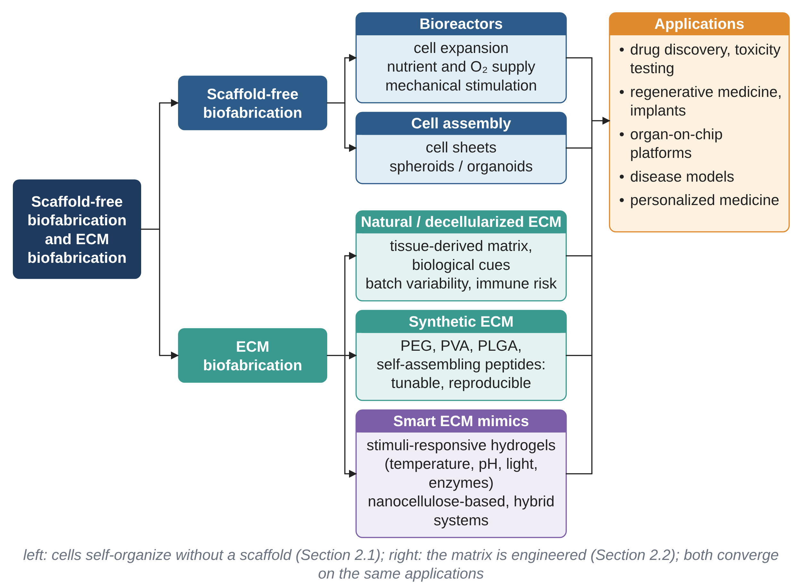
Figure 2.1 summarises the structure of this chapter, mapping scaffold-free approaches, ECM strategies, and their applications in drug discovery, regenerative medicine, organ-on-chip platforms, and personalised medicine.
2.1 Scaffold-free Biofabrication
2.1.1 The Challenge of Biomaterials
Most biofabrication strategies make use of biomaterials that are shaped into scaffolds. These scaffolds provide mechanical support and guide cells as they grow into tissue. However, using scaffolds also introduces important challenges. Some biomaterials are not fully biocompatible and can trigger immune responses when implanted (De Pieri et al., 2021) . Others degrade too quickly, or not quickly enough, creating a mismatch between scaffold degradation and new tissue formation. In addition, scaffolds must be sterilisable using industrial methods such as autoclaving, gamma irradiation, or ethylene oxide—otherwise they cannot be safely applied.
For these reasons, researchers have explored an alternative approach: allowing cells to build their own support. Cells naturally secrete extracellular matrix (ECM) molecules such as hyaluronic acid, proteoglycans, and collagen (see Box 2.1). These ECM components form a three-dimensional network that binds cells together and provides structural and biochemical signals (Naba, 2024). When cells are cultured at sufficiently high density, they can generate enough ECM to support their own growth and create mechanically stable tissue without an artificial scaffold.
This scaffold-free strategy reduces many of the complications associated with synthetic biomaterials. By relying on the cells’ intrinsic ability to assemble their environment, it produces tissues that more closely resemble natural tissue organisation (Sharma et al., 2019). On the other hand, it requires careful control of cell density, nutrient transport, and oxygen supply, because the cells must do more work themselves to form a stable structure (Rademakers et al., 2019).
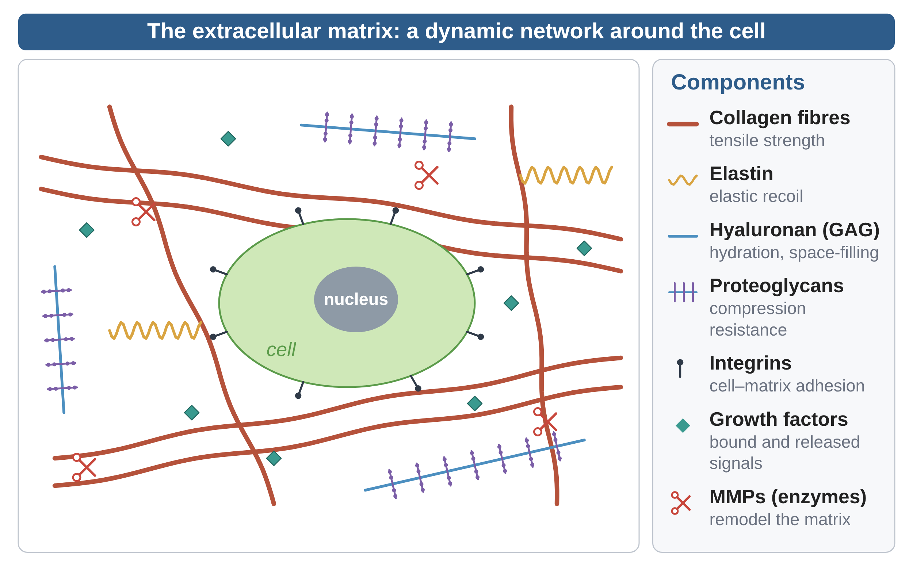
2.1.2 Bioreactors for Scaffold-free Constructs
At the laboratory scale, cells are first grown in relatively simple culture containers (Figure 2.3). These provide a sterile environment, space for cell adhesion, and access to nutrients. Common examples include:
Microplates: flat-bottom plates with multiple wells, ranging from 384 wells (about 0.05 mL of medium per well) to 6 wells (about 3 mL per well). Made of polystyrene, often treated with gamma irradiation to enhance cell adhesion.
T-flasks: trapezoid-shaped plastic flasks used for larger cultures (25–225 cm² growth area, about 5–50 mL of medium). Cells attach to the bottom surface, and flasks can be stacked in incubators.
Non-adherent tubes: conical tubes made of polypropylene (e.g. Eppendorf 0.5–2 mL, Falcon tubes 15–50 mL). Used for non-adherent cells, centrifugation, or recovering proteins and molecules.
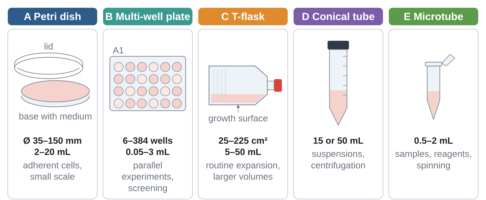
As experiments scale up, these simple containers are replaced by bioreactors (Figure 2.4). A bioreactor is a controlled system that supports cell growth, nutrient exchange, and in some cases, tissue formation. They are typically cylindrical vessels made of polypropylene or glass, ranging from 125 mL to hundreds of liters.
Key features of bioreactors for scaffold-free constructs:
Agitation and mixing: prevents cells from settling at the bottom and improves nutrient distribution.
Gas exchange: ensures oxygen supply and removal of CO₂.
Controlled environment: temperature, pH, and nutrient flow must mimic physiological conditions.
Scale-up potential: small laboratory bioreactors can be translated into industrial tanks for producing large numbers of cells.
Typical culture conditions. Mammalian cells are cultured at 37 °C in a humidified atmosphere (about 95 % relative humidity, to limit evaporation of the medium) containing 5 % CO₂. The CO₂ is needed because most media are buffered with sodium bicarbonate, as blood is: dissolved CO₂ and bicarbonate form a buffer pair, and the pH follows the Henderson–Hasselbalch equation, pH = 6.1 + log([HCO₃⁻]/(0.03 pCO₂)), with pCO₂ in mmHg. With about 26 mM bicarbonate (e.g. MEM, RPMI 1640), 5 % CO₂ (about 36 mmHg) keeps the medium at pH 7.2–7.4; media with more bicarbonate, such as DMEM (44 mM), need up to 10 % CO₂. A flask taken out of the incubator loses CO₂, and its pH rises within minutes. Because CO₂ and water vapour dilute the air, the gas phase of an incubator contains about 18–19 % O₂, and the medium in equilibrium with it holds only about 0.2 mM dissolved oxygen. Tissues in the body are far less oxygenated (about 1–11 % O₂, "physioxia"), so stem cells and chondrocytes are often cultured at 2–5 % O₂, and bioreactors typically control dissolved oxygen at 30–50 % of air saturation.
Nutrients and waste products. Media supply glucose (5.5–25 mM) and glutamine (2–4 mM) as the main energy and nitrogen sources. Cells in culture convert much of the glucose to lactate, even in the presence of oxygen, and lactate acidifies the medium and inhibits growth above about 20–40 mM. Glutamine is metabolised, and also decomposes spontaneously at 37 °C, to ammonium, which becomes toxic above roughly 2–5 mM. In large, dense cultures, dissolved CO₂ accumulates as well (above about 100–150 mmHg it slows growth), and the base added to neutralise lactate raises the osmolality above the physiological 280–320 mOsm kg⁻¹. Feeding, medium exchange or perfusion therefore has two tasks: supplying nutrients and removing these waste products.
To maximise surface area for adherent cells, bioreactors often include microcarriers (polymeric beads, typically 100–300 µm in diameter) or fibrous scaffolds packed into cartridges. Medium circulates between the fibres, providing nutrients and removing waste. This design is especially useful for producing large amounts of stem cells or biologics such as antibodies.
Figure 2.4 contrasts the two basic bioreactor designs. In the stirred-tank bioreactor (Figure 2.4A), a motor-driven impeller keeps cells or spheroids in suspension, baffles along the wall improve mixing, a sparger at the bottom supplies oxygen and removes CO₂, and probes for pH, dissolved oxygen and temperature feed the control system; the same layout is used from small glass vessels to large single-use bags. The hollow-fibre perfusion bioreactor (Figure 2.4B) works the other way round: medium is pumped from a reservoir through a gas exchanger and then inside thousands of semi-permeable fibres, while the cells grow at very high density in the space between the fibres, where they are protected from shear. The two designs thus illustrate the balance between vigorous mixing and gentle, high-density culture.
While scaffold-free culture avoids synthetic supports, bioreactors are still needed to:
Maintain high cell densities.
Provide mechanical cues such as shear stress or compression.
Enable long-term cultures for tissue maturation.
Chapter 5 treats bioreactor types, mass transport and scale-up in detail (Section 5.2–5.3).
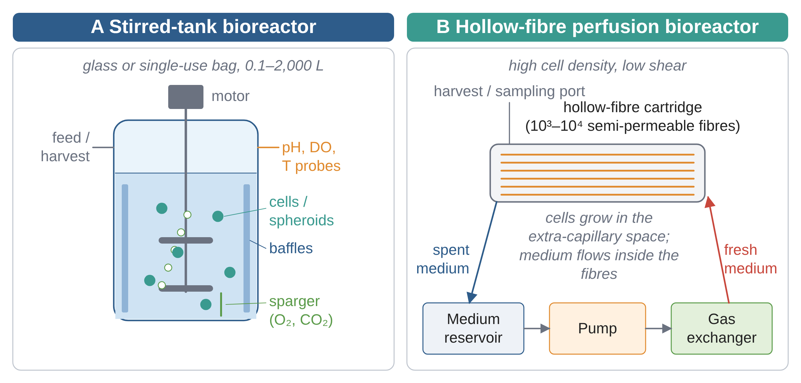
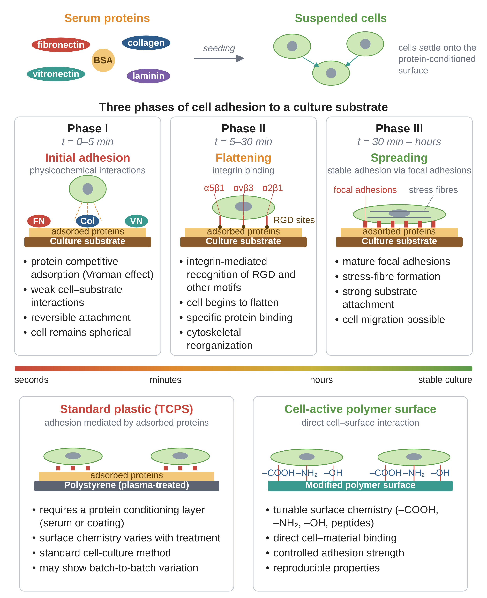
2.1.3 From Single Cells to Tissue Organisation
After expanding a sufficient number of cells in culture, the next challenge is to organise them into tissues without relying on synthetic scaffolds. In living organisms, this process occurs naturally during development and tissue repair, guided by cell–cell adhesion and extracellular matrix (ECM) secretion. Reproducing such organisation in vitro requires strategies that either exploit spontaneous cell aggregation or apply external guidance to control tissue shape.
Some cell types can self-assemble spontaneously. For example, chondrocytes (cartilage cells) and many cancer cellsnaturally form spheroids under non-adherent culture conditions. Gravity brings the cells together, while their own ECM production stabilises the compact, tissue-like aggregate (Arya et al., 2019).
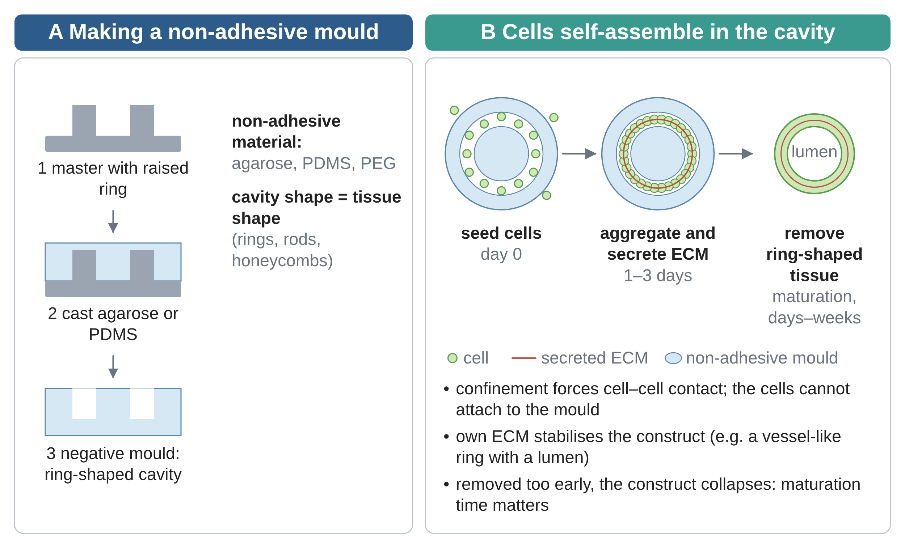
Other cell types require external guidance. A widely used strategy is the use of non-adhesive moulds, typically made of PDMS (poly(dimethylsiloxane) or agarose hydrogels, which prevent cell attachment. Cells seeded into such moulds are forced into close contact, where they aggregate and secrete ECM until the construct becomes mechanically stable (Figure 2.6). When allowed to mature long enough, this approach yields complex 3D tissue-like structures. The workflow is straightforward:
A negative mould is fabricated (e.g. by replica moulding or 3D printing).
Cells are seeded into the cavities.
The confined geometry forces aggregation into predictable shapes (e.g. rings, honeycomb structures).
With time, secreted ECM provides sufficient mechanical stability for the construct to retain its architecture.
As shown in Figure 2.6, this method enables controlled cellular arrangements such as hollow or circular structures reminiscent of blood vessels. Timing is crucial: if constructs are removed from the mould too early, before sufficient ECM accumulation, they collapse. With adequate maturation, however, complex and stable 3D tissue architecturescan be obtained (Mandrycky et al., 2016).
Beyond these examples, scaffold-free biofabrication follows two complementary routes:
2D cell sheets, which preserve cell–cell junctions and deposited ECM, suitable for direct application (e.g. skin, cornea) or stacking (e.g. cardiac patches).
3D spheroids and organoids, which reproduce aspects of native tissue structure and function, and act as building blocks for larger constructs.
These two routes are compared in Figure 2.7 and Table 2.2. Section 2.1.4 will explore the 2D route, while Section 2.1.5 details the 3D route, including methods for spheroid and organoid formation.
| Feature | 2D Cell Sheets | 3D Spheroids/Organoids |
|---|---|---|
| Structure | Planar, layered | Spherical, volumetric |
| ECM & Junctions | Preserved in-plane (cells maintain their ECM and junctions) | 3D network of ECM throughout construct |
| Primary Use | Surface coverage (e.g. skin grafts, corneal repair) | Volume and models (e.g. tumours, liver organoids, brain models) |
| Complexity | Moderate (mainly one or few layers) | High (multiple cell types, gradients, organ-like functions) |
| Route to larger constructs | Stackable layers for thicker tissues (e.g. cardiac patches) | Assembly of multiple units into larger constructs (fusion or bioprinting) |
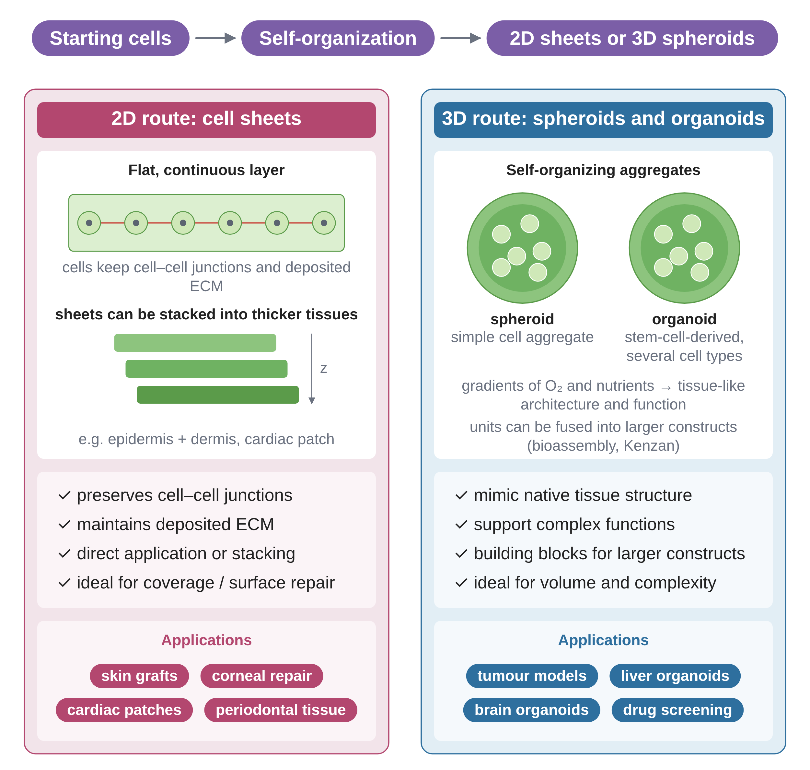
2.1.4 Cell sheets
Cell sheets represent the two-dimensional pathway of scaffold-free biofabrication. Unlike spheroids or organoids, which grow in three dimensions, cell sheets remain planar but retain intact junctions and ECM. This makes them especially suitable for direct transplantation (e.g. skin, cornea, cardiac patches) or for layering into stratified tissues.
In many cases, biofabrication aims to create 3D tissue architectures. Yet in some therapeutic applications, it is more practical to deliver cells as a sheet. For example, skin cell sheets can be applied directly to wounds, and cardiomyocyte sheets can be used to repair damaged heart tissue after myocardial infarction.
The challenge lies not in growing cells on a surface — this is straightforward with conventional cell culture — but in detaching them as an intact, mechanically stable sheet. Conventional detachment methods, such as enzymatic digestion with trypsin, disrupt cell–cell junctions and the ECM (see Box 2.3). To overcome this, researchers developed temperature-responsive culture surfaces.
These surfaces are coated with polymers such as poly(N-isopropylacrylamide) (polyNIPAAM), which switch their properties with temperature. At 37°C, the surface is hydrophobic, allowing proteins and cells to attach and form a confluent sheet. When the temperature is lowered below the lower critical solution temperature (LCST), the polymer becomes hydrophilic and detaches from the culture plate, lifting the cell sheet together with its deposited ECM (Figure 2.8). This method preserves crucial cell–cell junctions and matrix components, resulting in a mechanically stable, functional tissue sheet.
Figure 2.8 illustrates:
Molecular mechanism: polymer chain collapse/expansion drives hydrophobic ↔︎ hydrophilic switching.
How it works: 37 °C → cells attach and grow; cooling to 10 °C → sheet detaches intact.
Key applications: corneal reconstruction, cardiac repair, skin grafts, and drug screening with 3D models.
Key advantages: no enzymes required, intact sheets with preserved ECM, gentle and non-toxic detachment, and re-usable surfaces.
Cell sheet engineering offers several advantages:
Preserves ECM and cell–cell contacts, unlike enzymatic harvesting.
Avoids foreign scaffolds, minimising risks of immunogenicity or chronic inflammation (Thummarati et al., 2023).
Allows layering: multiple sheets can be stacked to form thicker tissues with stratified organisation, such as skin (epidermis + dermis) or cardiac patches (Sharma et al., 2021).
Beyond clinical use, cell sheets are also employed in drug testing and disease modelling, where multi-layer constructs can better replicate in vivo physiology (Haraguchi et al., 2015). When combined with 3D bioprinting, sheets can be patterned and layered with precision, enabling the creation of complex tissues with controlled architecture (Hwang et al., 2021).
Cell-sheet engineering is one of the few scaffold-free technologies that has reached the clinic, and its regulatory history is instructive. Japan approved autologous cultured epidermis (JACE) in 2007 and, under its conditional and time-limited approval scheme for regenerative products, the autologous skeletal-myoblast sheet HeartSheet for heart failure in 2015; when the post-marketing data did not confirm efficacy, full approval was refused and the product was withdrawn in 2024 (Yano et al., 2025). Epithelial cell sheets have fared better: Nepic (autologous corneal epithelial sheets) and Ocural (autologous oral-mucosal epithelial sheets for limbal stem-cell deficiency) were approved in 2020 and 2021 (Lin et al., 2025). The lesson for biofabrication is that a scaffold-free construct must not only be manufacturable but must show a clinical benefit that survives a controlled trial.
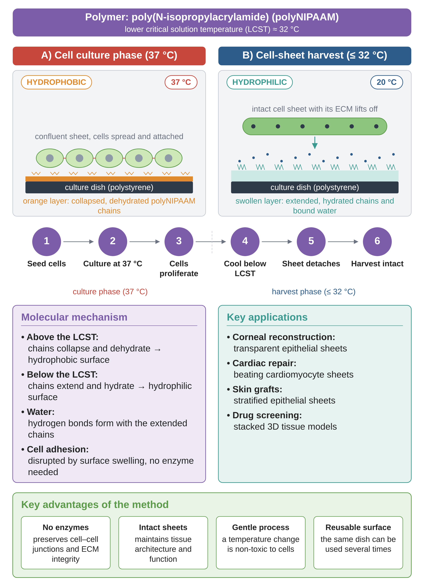
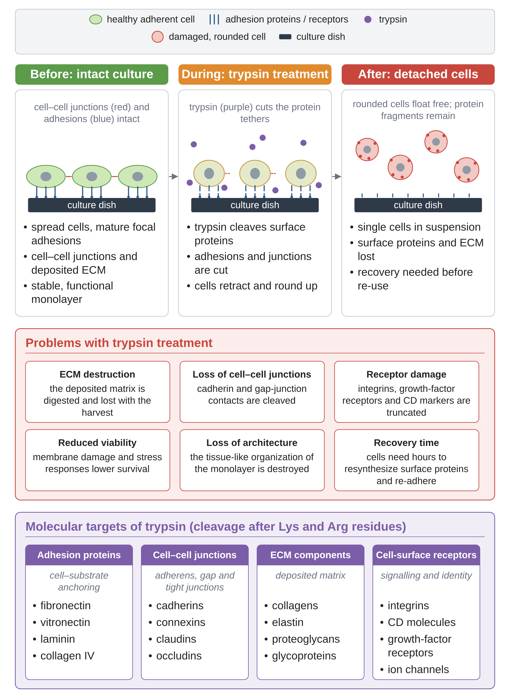
2.1.5 Spheroids and Organoids
While cell sheets preserve planar architecture, many applications require three-dimensional tissue constructs. Spheroids and organoids provide this 3D route. Spheroids are simple aggregates formed by spontaneous cell–cell adhesion, whereas organoids are stem-cell-derived miniature organs with multiple cell types. Their self-organising nature makes them essential building blocks for advanced scaffold-free biofabrication.
In scaffold-free approaches, one of the most widely used strategies is to let cells self-assemble into 3D structures. Two main forms are distinguished:
Spheroids are simple 3D aggregates of cells. They form when cell–cell interactions dominate over cell–surface interactions. Many cell types, such as chondrocytes and cancer cells, naturally form spheroids on non-adherent surfaces. Because of their compact geometry and gradients of nutrients and oxygen, spheroids reproduce features of native tissues, such as the necrotic core of tumours. Section 5.2.1 calculates how far oxygen penetrates before such a core forms.
Organoids are more advanced. They are miniaturised tissue models derived from stem cells or progenitor cells, capable of differentiating into multiple cell types. Organoids can recapitulate aspects of tissue structure and function, such as the crypt–villus structure of the intestine or neural layering in the brain (Zhou et al., 2021). Their complexity makes them especially valuable for disease modelling, drug discovery, and developmental biology.
Beyond spontaneous aggregation or mould-guided strategies, methods for spheroid formation are often grouped into two categories (Figure 2.10):
Passive methods rely on intrinsic cellular behaviour under minimal external influence. Examples include the hanging drop technique and liquid overlay, where cells aggregate by gravity or on non-adhesive surfaces. These approaches are simple, preserve natural cell–cell interactions, but are usually limited in throughput.
Active methods use external forces or engineered environments to drive aggregation. Examples include centrifugation (forced aggregation), rotating bioreactors, microcarrier systems, and magnetic levitation, which support large-scale production with better nutrient exchange but require careful control to avoid shear stress or nanoparticle toxicity.
This distinction is summarised in Table 2.3, which compares passive and active methods according to their principles, advantages, and limitations.
Together, spheroids and organoids bridge the gap between simple 2D monolayers and complex in vivo tissues. They are increasingly used as building blocks in scaffold-free tissue engineering, where their self-organising properties allow assembly into larger, more functional tissue constructs.
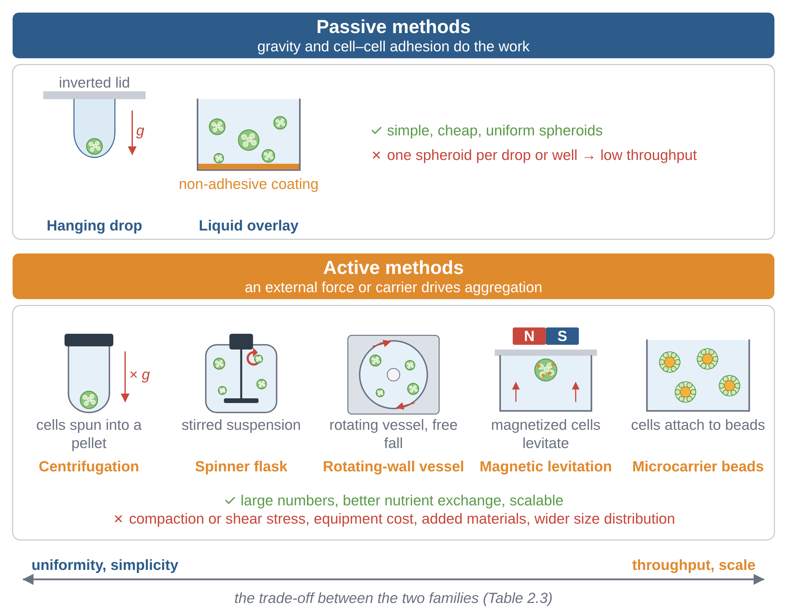
| Method | Principle | Advantages | Limitations |
|---|---|---|---|
| Hanging drop | Gravity pulls cells into droplet bottom | Simple, uniform size | Low throughput |
| Liquid overlay | Non-adhesive surface prevents attachment | Cheap, scalable | Less control over size |
| Spinner flask | Constant stirring prevents adhesion | Large numbers | Shear stress damage |
| Rotating wall vessel | Microgravity-like culture | Physiological environment | Expensive, slower |
| Centrifugation | Centrifugal force packs cells into a pellet | Fast, reproducible, one spheroid per well | Compaction stress; low throughput in tubes |
| Magnetic levitation | Nanoparticles levitated by magnets | Rapid assembly | Nanoparticle safety concerns |
| Microcarrier beads | Cells attach to beads, aggregate later | Scalable | Heterogeneous size |
2.1.5.1 Hanging drop
The hanging drop method is one of the simplest and oldest ways to form spheroids. A small droplet of cell suspension is pipetted onto the lid of a culture plate. When inverted, surface tension holds the drop in place. Over time, gravity causes the cells to accumulate at the tip of the droplet, where they naturally aggregate into spheroids (Figure 2.11).
This method produces uniform spheroids, preserves cell–cell interactions, and is inexpensive. However, its main limitation is low throughput, since each droplet yields only one spheroid (Jensen and Teng, 2020). The advantages and limitations are compared on Table 2.4.
Typical parameters. Figure 2.11 summarises the conditions used in practice. Each drop holds 20–40 µL of medium: smaller drops evaporate quickly, while larger drops become too heavy for surface tension to hold and detach when the lid is turned over. The number of cells per drop, typically between about 500 and 20,000, is the main design parameter, because it sets the size of the spheroid: a spheroid is a compact sphere, so its diameter increases roughly with the cube root of the cell number, and doubling the diameter requires about eight times more cells. Cells collect at the bottom of the drop within hours and form a compact spheroid within 24–72 h, depending on the cell type and on how much extracellular matrix the cells deposit. Because the cells only touch the liquid–air interface, they cannot attach to any surface, and cell–cell adhesion is the only interaction left to them.
Advantages and limitations. The method needs no special equipment or synthetic materials: an ordinary culture dish lid and a pipette are enough. Since every drop receives the same number of cells, the spheroids are uniform in size, and each drop yields exactly one spheroid, which makes the spheroids easy to track individually. The same isolated drop also explains the limitations. Making and handling hundreds of drops by hand is slow, so throughput is low, and the drops can detach or merge when the lid is moved. The small volume is depleted of nutrients and accumulates waste within days, and the medium is difficult to replace without disturbing the drop, while evaporation changes the medium composition. Hanging drops are therefore mainly used for the aggregation step: once the spheroids have formed, they are usually transferred to non-adhesive multi-well plates for longer culture (Section 2.1.5.2). Commercial hanging-drop plates with 96 or 384 positions, filled by pipetting robots, partly overcome the throughput limitation and make the method suitable for drug screening (Jensen and Teng, 2020).
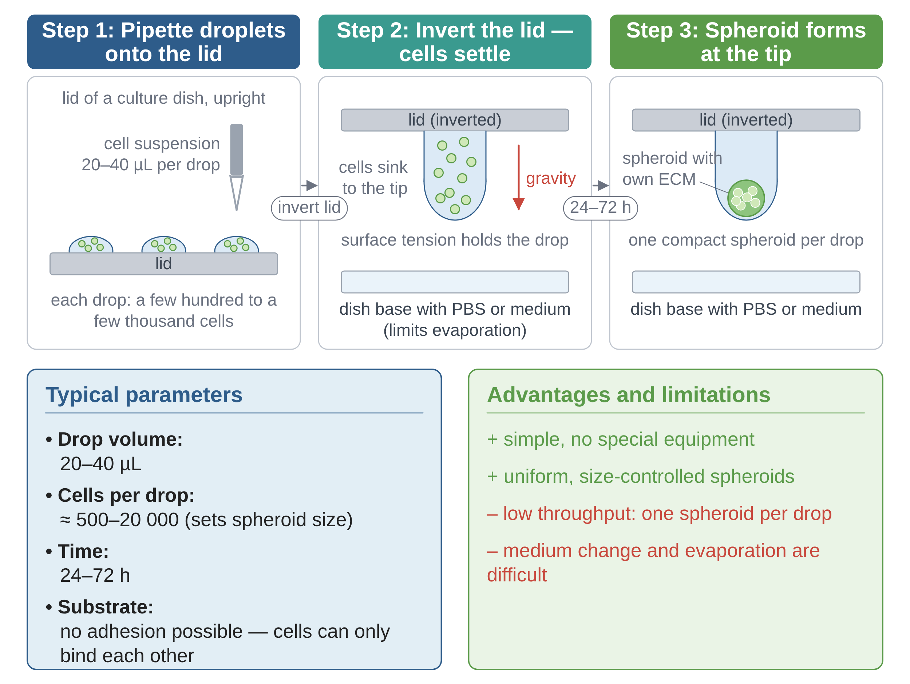
| Advantages | Limitations |
|---|---|
|
|
2.1.5.2 Liquid Overlay Technique
The liquid overlay technique forces cells to aggregate by preventing them from attaching to the culture surface. Plates are coated with non-adhesive materials such as agarose or polyethylene glycol, so cells cannot spread and instead form spheroids (Figure 2.12).
This method allows the generation of multiple spheroids in parallel, but heterogeneity in size and shape can occur. To improve uniformity, microwells can be combined with non-adhesive coatings, confining spheroid growth and controlling diameter (Chaicharoenaudomrung et al., 2019). Table 2.5 gives a comparison of the liquid overlay techniques.
| Method | Principle | Advantages | Limitations | Best applications |
|---|---|---|---|---|
| Non-adhesive coating | Agarose/PEG prevents cell attachment |
|
|
|
| Temperature-sensitive | PolyNIPAAm changes with temperature |
|
|
|
| Microwells | Physical confinement controls size |
|
|
|
Figure 2.12 sets the three variants of the liquid overlay technique side by side. With a plain non-adhesive coating of agarose or PEG (Figure 2.12A), cells cannot attach to the dish and aggregate freely in the medium, giving many spheroids at once but of variable size. A thermoresponsive polyNIPAAM coating (Figure 2.12B) uses the same switch as in cell-sheet engineering (Figure 2.8): cells first spread on the surface at 37 °C, and cooling below the LCST releases them without enzymes, after which they aggregate. In non-adhesive microwells (Figure 2.12C), each U-bottom cavity holds a single aggregate, so that spheroid size and number become uniform. Read from left to right, the panels move from the simplest to the most controlled variant.
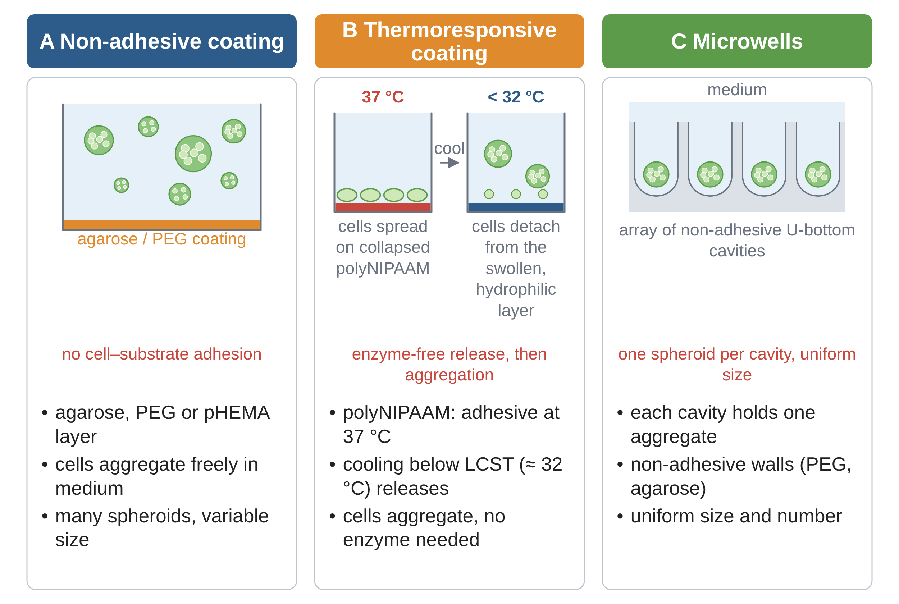
2.1.5.3 Active rotational method
In the active rotational method, cells are cultured in spinner flasks or rotating bioreactors. Continuous agitation prevents attachment to surfaces and promotes cell–cell contact, leading to spheroid formation (Figure 2.13).
This method is scalable and allows for good nutrient and oxygen exchange, but excessive shear stress may damage sensitive cells. Special low-shear designs, such as the rotating wall vessel developed by NASA, help minimise this issue (Duval et al., 2017). Stirred-tank, wave and other scalable bioreactors are compared in Section 5.3 (Table 5.3).
The two rotational systems in Figure 2.13 keep cells in suspension in different ways. In a spinner flask (Figure 2.13A), a central paddle or magnetic stir bar stirs the medium and side arms allow gas exchange and sampling; the constant motion makes cells collide and aggregate, but the stirring is also the source of shear stress. In the rotating-wall vessel, or rotary cell culture system (Figure 2.13B), there is no stirrer: the whole vessel rotates about a horizontal axis, so that the cells remain in a low-shear, microgravity-like free fall, while oxygen is supplied without bubbles through a central membrane. Moving the motion from a paddle to the vessel itself is what makes the second system so much gentler on the cells.
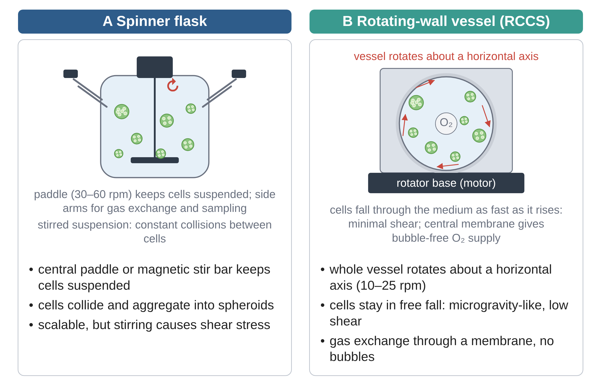
2.1.5.4 Centrifugation (forced aggregation)
In the centrifugation method, also called forced aggregation or pellet culture, a cell suspension is spun down so that centrifugal force packs the cells together at the bottom of a conical tube or of a round-bottom (U-) or V-bottom well (Figure 2.14A). Instead of waiting for cells to meet by slow sedimentation or random collision, centrifugation brings them into close contact within minutes. Cell–cell adhesion (mainly cadherin-mediated) can therefore start immediately, and the loose pellet compacts into a round spheroid within hours.
The classic example is the pellet culture used for cartilage: a few hundred thousand mesenchymal stem cells are pelleted in a conical tube and cultured with chondrogenic growth factors, forming a cartilage-like tissue (Johnstone et al., 1998). The same principle has been miniaturised: a brief centrifugation of cells seeded in non-adhesive U-bottom 96- or 384-well plates produces exactly one spheroid per well, with a diameter set by the number of cells seeded (Ivascu and Kubbies, 2006). This makes the method fast, reproducible and compatible with automated drug screening. Its limitations are the mechanical stress of centrifugation on sensitive cells, the handling of one spheroid per tube or well, and, for large pellets, the diffusion-limited supply of oxygen and nutrients to the core.
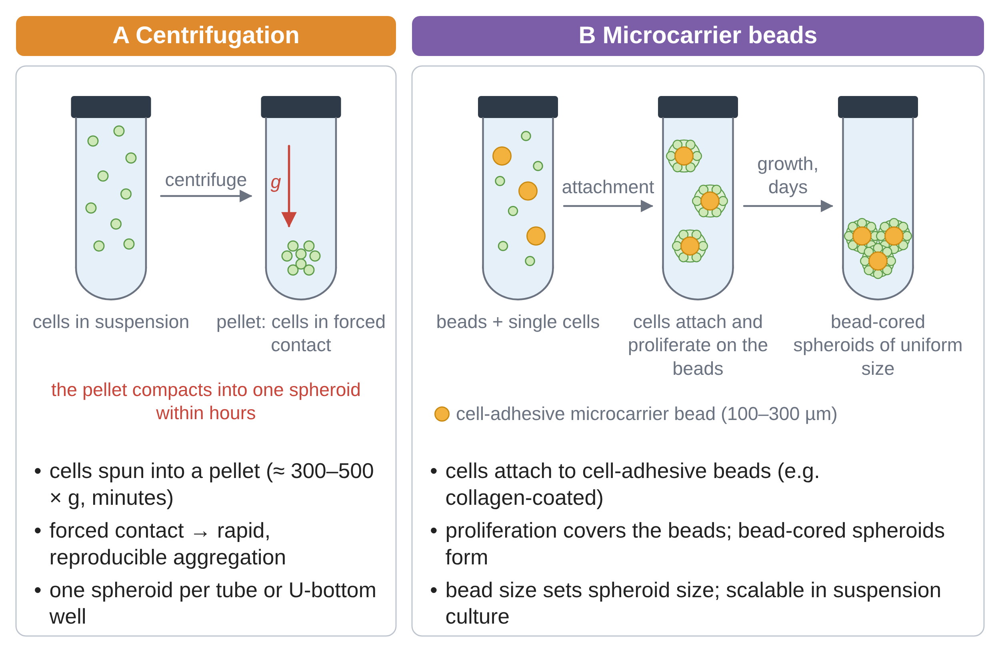
2.1.5.5 Microcarrier beads
Microcarriers are small spherical beads used as attachment surfaces for cells in suspension cultures. Once covered with cells, the beads may either remain intact (non-degradable) or degrade, allowing cells to form spheroids (Figure 2.14B).
Figure 2.14 places the microcarrier route next to centrifugation. Whereas centrifugation (Figure 2.14A) pellets cells into forced contact so that a spheroid forms within hours, the microcarrier method (Figure 2.14B) proceeds in stages: single cells are mixed with cell-adhesive beads, attach to and proliferate on their surface, and over several days form aggregates with a bead at their core. Because the bead provides the initial attachment surface, its size largely sets the size of the resulting aggregate, and the process can be scaled up in suspension culture.
Microcarriers increase the available surface area, enabling high-density cultures in bioreactors. They are widely used for expanding human mesenchymal stem cells (hMSCs), particularly in microcarrier-based bioreactor systems, to improve yield and maintain functionality (Tsai et al., 2020) (Tsai et al., 2020).
Which cells can serve as such a source depends on their developmental potential, which Figure 2.15 summarises from top to bottom, with potency decreasing along the way. The zygote is totipotent and can form all embryonic and extra-embryonic tissues. The inner cell mass of the blastocyst, the origin of embryonic stem cells, is pluripotent, as are induced pluripotent stem cells obtained by reprogramming; these cells give rise to ectoderm, mesoderm and endoderm and to the germ line. Multipotent stem cells, such as MSCs, stay within the lineages of their own germ layer, in this case the mesoderm. This hierarchy explains why some tissues can readily be built from accessible adult stem cells, whereas others remain difficult to reproduce in spheroids and organoids.
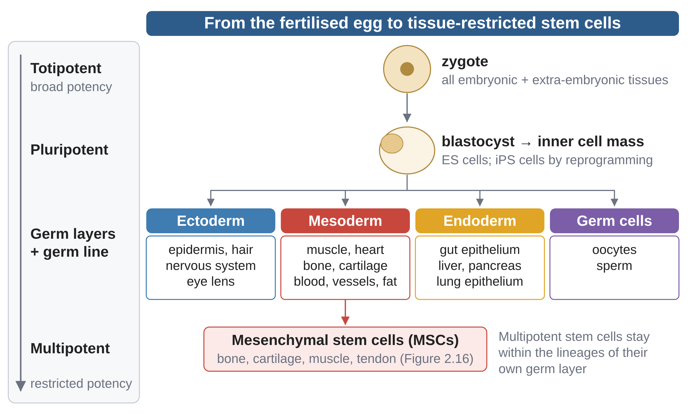
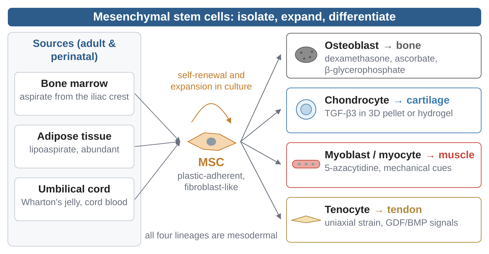
2.1.5.6 Magnetic levitation
In magnetic levitation, cells are first incubated with magnetic nanoparticles (e.g. iron oxide). When exposed to a magnetic field, the cells are attracted together and assemble into spheroids or other 3D constructs (Figure 2.17).
Figure 2.17 breaks the procedure into three steps. Cells are first incubated in medium containing magnetic nanoparticles, which they take up or bind at their surface, so that the cells themselves become magnetised. A magnet is then placed on the lid above the well, and the field gradient pulls the cells upwards, without any adhesive substrate, until they reach the air–liquid interface. There the levitated cells meet and assemble into a 3D spheroid within hours, and the pattern of the magnet defines the shape of the construct, so that patterned magnets can produce rings or layers instead of spheres.
This technique allows precise spatial control of cell aggregation and can be combined with bioreactors to add dynamic stimulation. However, the safety of magnetic nanoparticles must be evaluated for each application (Lewis et al., 2017; Marques et al., 2022).
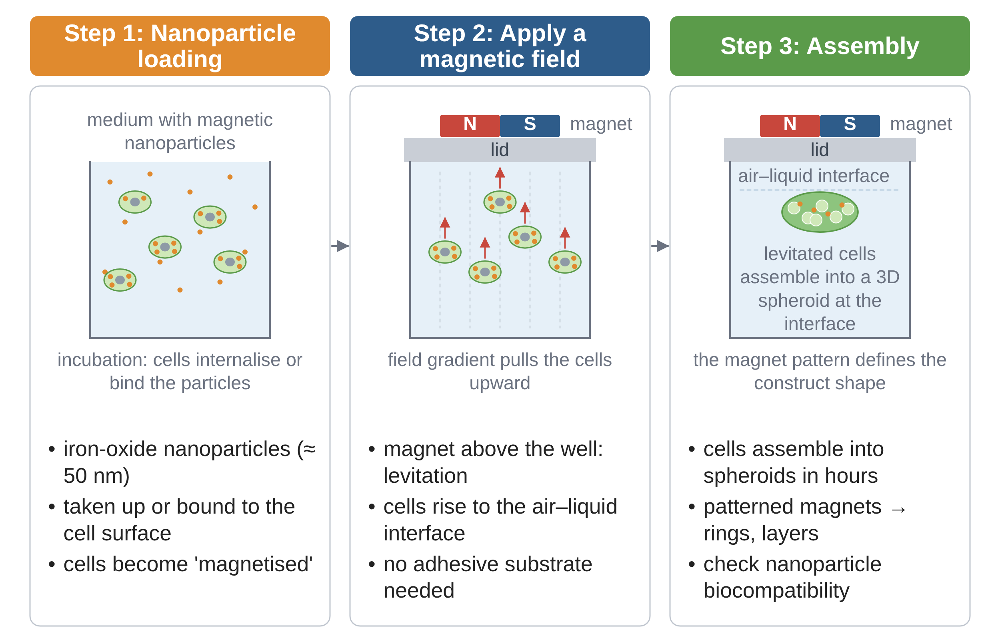
2.1.5.7 Emulsion
The emulsion method encapsulates cells within aqueous droplets dispersed in oil, creating many small, isolated microenvironments (Figure 2.18). Inside each droplet, cells are confined and forced to aggregate into spheroids.
This approach is high-throughput and can generate spheroids with controlled size. Microfluidic emulsification offers even finer control, enabling production of thousands of uniform spheroids for drug testing and disease modelling (Qu et al., 2021).
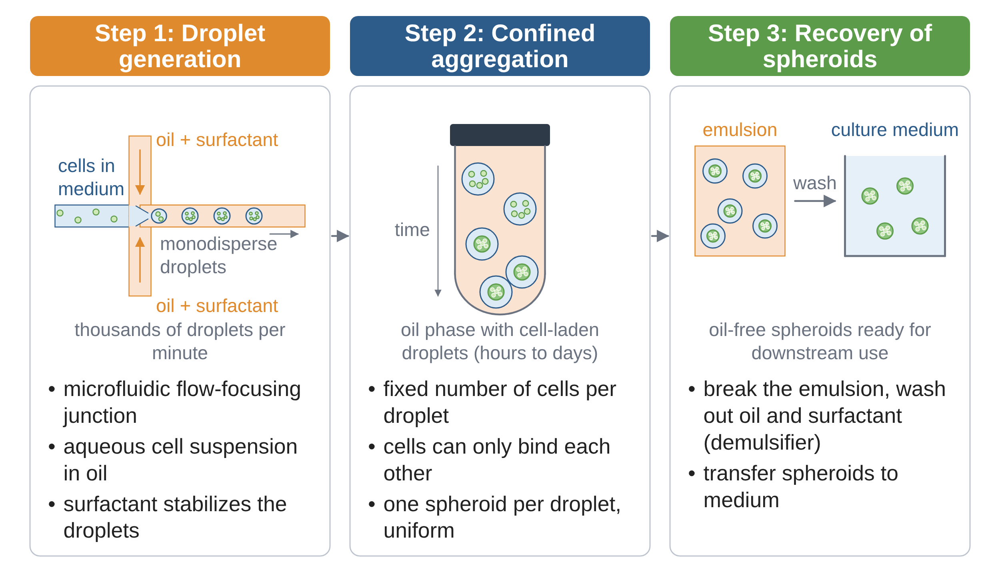
2.1.5.8 Comparison of spheroid formation methods
While each spheroid formation method has been described individually, their relative advantages and limitations become clearer when compared side by side (Figure 2.19) (Table 2.6). The choice of method depends on the cell type, the number of spheroids required, and the degree of control over size and shape. For example, simple approaches like the hanging drop are ideal for studying cell–cell interactions in small numbers, whereas spinner flasks or microfluidic emulsions enable the production of thousands of spheroids for drug testing or biomanufacturing.
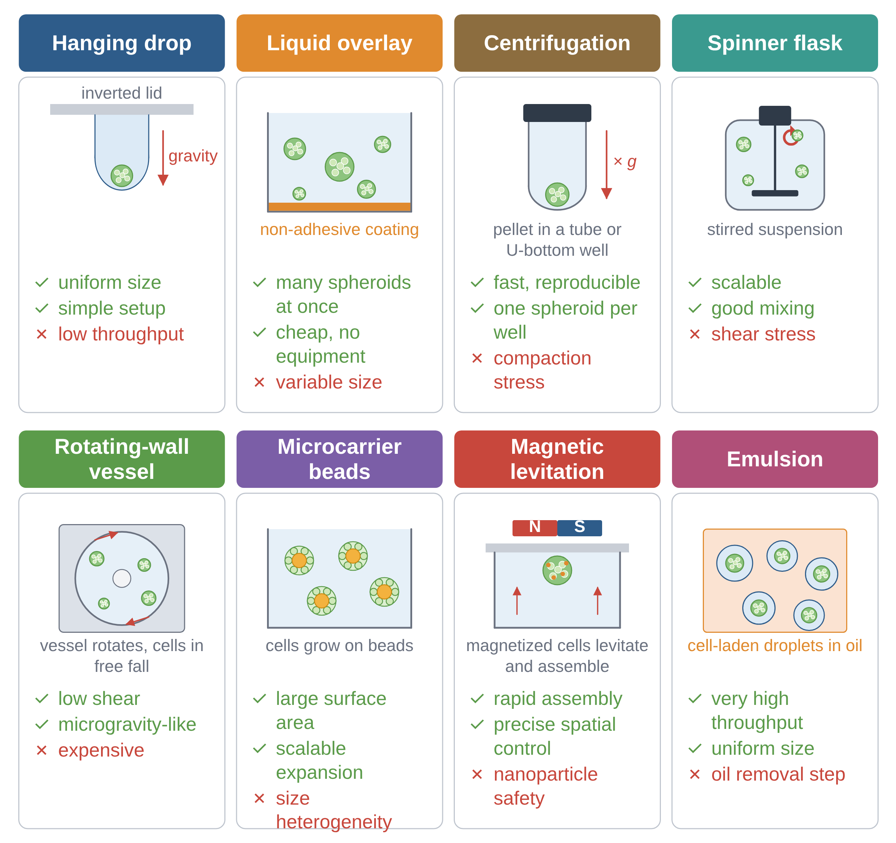
| Method | Principle | Advantages | Limitations |
|---|---|---|---|
| Hanging drop | Gravity pulls cells to bottom of drop | Produces uniform, compact spheroids; inexpensive | Very low throughput; one spheroid per drop |
| Liquid overlay | Non-adhesive surface prevents cell attachment | Scalable; microwells: uniform size; multiple spheroids per plate | Variable size; less precise control |
| Centrifugation (forced aggregation) | Centrifugal force pellets cells in a tube or U-bottom well | Fast, reproducible; one uniform spheroid per well; screening-compatible | Mechanical stress on sensitive cells; one spheroid per tube or well |
| Spinner flask | Continuous stirring keeps cells in suspension | High yield; good nutrient mixing | Shear stress can damage sensitive cells |
| Rotating wall vessel | Simulates microgravity; low-shear rotation | Physiological environment; uniform spheroids | Slow growth; costly equipment |
| Microcarriers | Cells attach to beads and later aggregate | High-density cultures; scalable stem cell expansion | Heterogeneous size; bead removal issues |
| Magnetic levitation | Magnetised cells aggregated by magnetic field | Rapid assembly; spatial control | Nanoparticle safety concerns |
| Emulsion | Cells confined in aqueous droplets in oil | Very high throughput; uniform spheroid size | Requires microfluidics; oil removal step |
2.1.6 Applications of Spheroids and Organoids
Spheroids and organoids are powerful tools that bridge the gap between simple 2D cultures and complex in vivo tissues. Their ability to mimic real tissue environments makes them essential in drug discovery, disease modelling, and regenerative medicine.
One of the most important applications is in drug testing. Traditional 2D cell cultures often fail to predict how drugs behave in humans. In contrast, liver spheroids composed of Kupffer cells, stellate cells, and biliary cells can reproduce tissue-level responses to drugs and predict liver toxicity more accurately (Kim et al., 2024). Similarly, tumour spheroids mimic cancer growth by developing oxygen gradients and necrotic cores, features observed in real tumours (Baniahmad, 2021).
In cancer research, spheroids and organoids are used to study tumour–immune interactions and to evaluate new therapeutic strategies. For example, patient-derived tumour organoids are emerging as a tool for personalised medicine, allowing doctors to test drug responses on a patient’s own cells before clinical treatment (Zanoni et al., 2020).
Spheroids also serve as building blocks in biofabrication. Using technologies like the Kenzan method, spheroids can be placed on arrays of microneedles and fused into larger 3D tissues, such as vascular tubes or liver constructs. Organoids, on the other hand, provide more complex systems that can be integrated into organ-on-chip devices, where microfluidics supply nutrients and simulate physiological conditions (Gunti et al., 2021).
These applications highlight the versatility of spheroids and organoids as both research models and building units for future tissue engineering.
Two developments since 2022 have widened the reach of spheroid and organoid technology:
First, the regulatory shift away from animal testing described in Chapter 1 (FDA Modernization Act 2.0, the 2025 FDA roadmap) makes organoids and organ-on-chip systems accepted ‘new approach methodologies’ in drug development, turning them from research tools into regulatory evidence.
Second, the same scaffold-free principles — bovine or avian myoblasts and adipocytes expanded in bioreactors, often on edible microcarriers or as aggregates — underpin cultivated meat. Singapore authorised the first product in 2020, the United States cleared cultivated chicken in 2023 and further products (salmon, pork fat) in 2025, Israel approved cultivated beef in 2024, the United Kingdom permitted cultivated meat in pet food in 2024, and Australia and New Zealand approved cultivated quail in 2025, while the European Union is still assessing applications under its novel-food regulation (FoodNavigator, 2026). Cultivated meat is thus the largest-scale application of scaffold-free biofabrication to date, and its bottlenecks — cheap serum-free media, cell density and bioreactor cost — are the bioprocess questions of Chapter 5.
2.2 Extracellular matrix (ECM) biofabrication
2.2.1 Composition and Distribution of ECM
In all multicellular organisms, cells are surrounded by a supportive environment known as the extracellular matrix (ECM). Far from being a passive background, the ECM is a dynamic 3D network that provides mechanical support, regulates cell signalling, and plays a central role in development, tissue repair, and regeneration (Naba, 2024).
The ECM is composed of both structural molecules and signalling regulators:
Fibrous proteins such as collagen, elastin, and fibronectin, which give tissues tensile strength, elasticity, and adhesion sites.
Proteoglycans and glycosaminoglycans (GAGs) such as hyaluronic acid and heparan sulfate, which retain water, resist compression, and regulate the diffusion of growth factors.
Adhesive glycoproteins (e.g. laminin) that organise ECM networks and mediate cell adhesion via integrins.
Growth factors and cytokines, stored in the ECM and released upon remodelling, which influence proliferation, migration, and differentiation.
Recent work has shown that ECM assembly and remodelling are tightly controlled by multiple layers of regulation (Naba, 2024) (Table 2.7) (Figure 2.20):
Genetic regulation of ECM proteins and their isoforms.
Post-translational modifications (PTMs) such as hydroxylation or glycosylation that affect stability and crosslinking.
Metabolic control, where amino acid availability (e.g. proline for collagen) and cellular energy status shape ECM deposition.
Circadian (day-night) rhythms, which influence the timing of ECM synthesis and degradation.
Mechanical feedback, where forces sensed by cells alter ECM production and alignment.
The matrisome — the complete set of ECM and ECM-associated proteins — provides a reference framework to describe these components and their variation across tissues. Proteomics now allows mapping of tissue-specific matrisomes, explaining why bone ECM is mineralised with hydroxyapatite, while cartilage ECM is rich in aggrecan and collagen II for compressive strength, and basement membranes contain laminin and collagen IV to form thin, specialised barriers.
The ECM is not static. It is continually remodelled by matrix metalloproteinases (MMPs), tissue inhibitors of metalloproteinases (TIMPs), and by endocytic recycling pathways. This dynamic reciprocity ensures continuous feedback between cells and their matrix, a process that is central for tissue homeostasis, adaptation, and regeneration.
Figure 2.20 brings these ideas together. Its upper panel (Figure 2.20A) shows that matrix assembly follows a fixed order: cells secrete fibronectin as soluble dimers and pull it into fibrils that form a first template, procollagen is then cleaved and assembles into collagen fibrils on this template, and finally fibrillin microfibrils cross the collagen network, stabilise it and add elastic recoil. Because each layer depends on the one before, collagen and fibrillin do not assemble properly without fibronectin fibrils. The lower panel (Figure 2.20B) closes the loop: the cell assembles the matrix, remodels it through MMPs, TIMPs and endocytic recycling, and senses the result through its integrins, so that the stiffness and composition of the matrix feed back on cell behaviour. The regulatory layers listed above act on this cycle, which is why the matrix is best understood as a continuous process rather than a one-off construction.
| Regulatory layer | Key mechanisms | Examples/Notes |
|---|---|---|
| Genetic regulation | Gene expression controls ECM protein synthesis | Collagen isoforms, fibronectin splice variants |
| Post-translational modifications (PTMs) | Enzymatic modifications affecting stability and assembly | Hydroxylation of proline/lysine in collagen; glycosylation of proteoglycans |
| Metabolic control | Nutrient and metabolite availability influence ECM deposition | Proline and glycine supply for collagen; energy status for secretion |
| Circadian rhythms | Biological clocks regulate timing of ECM synthesis and degradation | Collagen fibril turnover shows circadian oscillations |
| Mechanical feedback | Cells sense forces and adapt ECM production accordingly | Fibroblasts align collagen under tension; bone ECM adapts to load |
| Proteolytic remodelling | Enzymes degrade ECM, balanced by inhibitors | MMPs vs. TIMPs; release of stored growth factors |
| Endocytosis & recycling | Cells internalise and recycle ECM fragments | Integrin-mediated uptake of fibronectin/ collagen fragments |
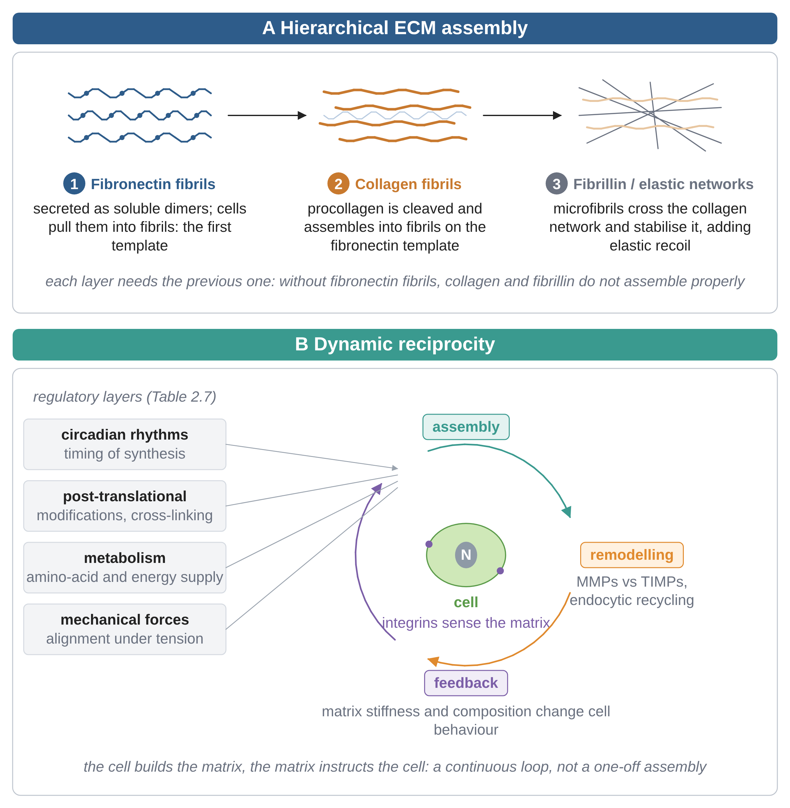
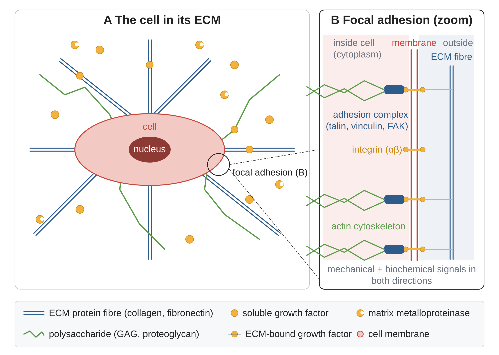
2.2.2 The composition of the ECM
In the following subsections, we first review the classical molecular building blocks of the ECM, then expand to the matrisome as a systems-level framework, and finally show how these components assemble into higher-order architectures that are directly relevant for biofabrication.
The extracellular matrix (ECM) is a complex network of macromolecules that provides structural support, biochemical cues, and mechanical properties to tissues (Frantz et al., 2010; Karamanos et al., 2021; Naba, 2024) (Figure 2.21). Understanding its composition is essential for biofabrication, because the choice of ECM components directly influences how engineered tissues behave. The ECM can be described at different levels: (i) the classical molecular components (glycosaminoglycans, proteins, proteoglycans), (ii) the matrisome framework that integrates these molecules into a systems view, and (iii) the architectures that ECM builds in tissues, such as basement membranes and interstitial matrices.
Figure 2.21 introduces this network at the scale of a single cell. In Figure 2.21A, a cell is surrounded by protein fibres such as collagen and fibronectin and by polysaccharide chains of GAGs and proteoglycans; growth factors occur both freely in solution and bound to the matrix, and matrix metalloproteinases are present to remodel it. The zoom in Figure 2.21B shows a single focal adhesion, where integrins span the cell membrane and connect an ECM fibre outside the cell, through an adhesion complex of talin, vinculin and FAK, to the actin cytoskeleton inside. Mechanical and biochemical signals pass through this link in both directions, so the cell both reads its matrix and acts on it.
2.2.2.1 Classical molecular components
The extracellular matrix can first be understood through its classical molecular components: glycosaminoglycans (GAGs), ECM proteins, and proteoglycans. Their properties are summarised in Table 2.8–Table 2.10, and their complementary roles are visualised in Figure 2.23, which highlights how these molecules together form the functional triad of the ECM.
Glycosaminoglycans (GAGs)
GAGs are long, unbranched polysaccharide chains composed of repeating disaccharide units (Table 2.8). Their high negative charge allows them to bind water, forming hydrated gels that give tissues compressive strength and regulate molecular diffusion.
Hyaluronic acid (HA): the only non-sulfated GAG; provides hydration and space for cell migration, and binds to CD44, influencing proliferation and migration.
Heparan sulfate: binds growth factors, morphogens, and cytokines, regulating signalling at cell surfaces and basement membranes.
Growth factors, cytokines and morphogens are small secreted proteins with which cells signal to each other. Growth factors (e.g. VEGF, FGF-2, TGF-β and the BMPs) stimulate proliferation, differentiation or migration; cytokines (e.g. interleukins, TNF-α and interferons) mainly coordinate inflammation and immune responses; morphogens (e.g. Wnt, Hedgehog and BMP proteins) spread from a source and form concentration gradients in developing tissue, and cells adopt different fates depending on the concentration they sense. All three act by binding to specific receptors on the target cell, which start intracellular signalling cascades that change gene expression. Heparan sulfate binds many of these factors through its negatively charged sulfate groups. The ECM thereby acts as a reservoir that protects the factors from degradation, shapes their gradients and presents them to their receptors; for FGF-2, heparan sulfate is even part of the receptor complex. Scaffolds and bioinks use the same principle when they incorporate heparin or heparan sulfate to bind growth factors and release them slowly.
Chondroitin sulfate and dermatan sulfate: abundant in cartilage, skin, tendons, and blood vessels; provide elasticity and mechanical resilience.
Keratan sulfate: present in cornea, cartilage, and intervertebral discs; contributes to hydration and corneal transparency.
By binding signalling molecules, GAGs act as reservoirs, releasing growth factors during remodelling or injury.
Proteins
ECM structural proteins provide mechanical strength, elasticity, and cell-binding sites (Table 2.9).
Collagens: the most abundant ECM proteins. Fibrillar collagens (types I, II, III, V) provide tensile strength, while collagen IV forms basement membrane networks.
Elastin: provides elasticity and recoil, allowing tissues such as skin, lungs, and arteries to stretch and return to shape.
Fibronectin: multifunctional glycoprotein that binds integrins and other ECM proteins, mediating cell adhesion, migration, and wound healing.
Laminins: form basement membrane networks, stabilised by nidogen, which links them to collagen IV.
Keratin: found in epithelia, hair, nails, and cornea, providing structural protection against stress.
These proteins not only form scaffolds but also store growth factors and interact with cell receptors, linking structure to signalling.
Proteoglycans (PGs)
Proteoglycans consist of a core protein covalently bound to one or more GAG chains (Table 2.10). Their negative charge allows them to retain water, providing hydration and resistance to compression (e.g. in cartilage and intervertebral discs).
Aggrecan: large PG in cartilage; forms complexes with HA, crucial for joint cushioning.
Perlecan: a major PG in basement membranes, important for filtration (e.g. kidney glomeruli) and growth factor binding.
Versican: abundant in connective tissues; regulates cell adhesion, proliferation, and migration.
Decorin and biglycan: small leucine-rich PGs that regulate collagen fibrillogenesis and modulate growth factor activity.
Because of their biophysical properties and interaction with signalling molecules, PGs act as mechanical shock absorbers and biochemical regulators of the ECM.
Figure 2.22 shows, for cartilage aggrecan, how this structure produces its mechanical function. In the bottle-brush aggregate (Figure 2.22A), many aggrecan core proteins are attached to a long hyaluronic acid backbone, and each carries numerous chondroitin sulfate and keratan sulfate chains that extend outwards and bind water. The close-up (Figure 2.22B) shows how each GAG chain is linked to the core protein and how its sulfate and carboxyl groups create a dense negative charge that draws in counter-ions and water. Under compression (Figure 2.22C), water is expelled, but the fixed charges resist the load and the mutual repulsion of the chains restores the swollen state once the load is removed. In cartilage (Figure 2.22D), these aggregates fill the spaces between collagen II fibrils and swell against this tensile network, while the size scale (Figure 2.22E) shows that the assembly spans nanometres to micrometres.
| GAG | Tissue / location | Function | Structure | Mw (kDa) |
|---|---|---|---|---|
| Heparin | Mast cell granules, blood, wound tissue | Highly sulfated GAG with the strongest negative charge density; acts as a potent anticoagulant by enhancing antithrombin activity. | 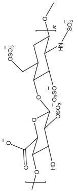 |
10-20 |
| Heparan sulfate | Cartilage, mucosa | Binds growth factors, morphogens, and cytokines, regulating cell signalling and development. | 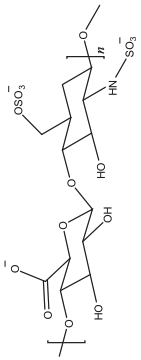 |
10-70 |
| Hyaluronic acid | Connective tissues, synovial fluid, vitreous humor | Role in cell proliferation and migration. | 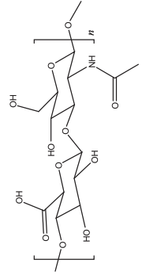 |
100-8000 |
| Chondroitin sulfate | Cartilage, tendons, ligaments, and skin | Provides compressive strength and elasticity. | 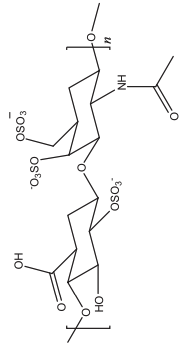 |
300 |
| Dermatan sulfate | Cartilage, tendons, ligaments, skin | Contributes to skin, blood vessel, and heart valve mechanics; binds growth factors and regulates fibrillogenesis. | 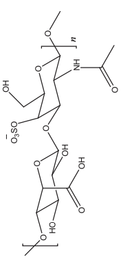 |
60 |
| Keratan sulfate | Cornea, cartilage, intervertebral discs | Contributes to transparency (cornea) and tissue hydration. | 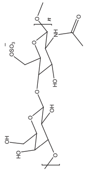 |
20 |
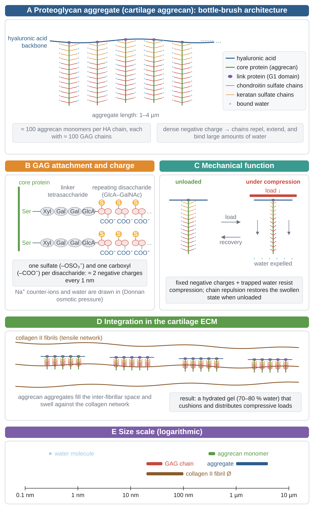
| Name | Tissue location | Function | Structure | Mw (kDa) |
|---|---|---|---|---|
| Collagens (I, II, III, V) | Skin, bone, cartilage, tendon, connective tissues | Provide tensile strength and structural support. | Triple helix (fibrillar) | ≈ 300 (triple helix of three ≈ 100 kDa α-chains) |
| Collagen IV | Basement membranes | Forms sheet-like networks, basement membrane stability. | Triple helix (network-forming) | ~500 (heterotrimer) |
| Laminins | Basement membranes | Network organisation; regulate adhesion and polarity. | Cross-shaped heterotrimer | ~900 |
| Nidogen (entactin) | Basement membranes | Links collagen IV and laminins, stabilises basement membranes. | Monomeric glycoprotein | ~150 |
| Elastin | Skin, lungs, arteries | Provides elasticity and recoil. | Cross-linked tropoelastin monomers (desmosine links) | ~60–70 (tropoelastin) |
| Fibronectin | Connective tissue, plasma | Cell adhesion, migration, wound healing. | Dimer linked by disulfides | ~250 (per subunit; 500 dimer) |
| Proteoglycan | Localisation | Function / Structure | Mw* (kDa) |
|---|---|---|---|
| Aggrecan | Cartilage, intervertebral discs | Large PG with many chondroitin sulfate and keratan sulfate chains; provides compressive strength and load-bearing capacity. | ~2,500 (incl. GAGs); core ~250 |
| Perlecan | Basement membranes, vascular endothelium | Binds laminin and collagen IV; contributes to filtration (kidney glomeruli) and growth factor signalling. | ~470 core; >800 with GAGs |
| Versican | Connective tissues, blood vessels, skin | Regulates cell adhesion, migration, and proliferation; influences tissue remodelling and inflammation. | 250–370 core; up to >1,000 with GAGs |
| Decorin | Skin, tendon, cartilage, cornea | Small leucine-rich PG; regulates collagen fibrillogenesis and binds growth factors. | ~40 core; ~100 with GAG |
| Biglycan | Bone, cartilage, muscle | Small leucine-rich PG; interacts with collagen and TGF-β; modulates bone formation and repair | ~42 core; ~100 with GAGs |
| Syndecans (1–4) | Cell surfaces (ubiquitous) | Transmembrane PGs; mediate cell–ECM adhesion, growth factor binding, and signalling. | ~20–35 core; +20–30 with GAGs |
| Glypicans (1–6) | Cell surfaces, especially during development | GPI-anchored PGs; regulate morphogen gradients (e.g. Wnt, Hedgehog, FGF signalling) | ~60 core; +20–40 with GAGs |
* Note on molecular weight of proteoglycans: Unlike most ECM proteins, the molecular weight (Mw) of proteoglycans varies widely.
Glycosaminoglycans (GAGs): long, negatively charged polysaccharides that hydrate tissues, provide compressive strength, and act as reservoirs for growth factors.
- Example: Hyaluronic acid (hydration, migration), heparan sulfate (signalling), chondroitin sulfate (cartilage elasticity).
ECM proteins: structural proteins such as collagens, elastin, laminins, fibronectin, nidogen, keratin. They provide tensile strength, elasticity, adhesion, and scaffolding for cells.
- Example: Collagens (tensile strength), elastin (recoil), fibronectin (adhesion, migration).
Proteoglycans (PGs): core proteins decorated with GAG chains, acting as shock absorbers, signalling reservoirs, and regulators of ECM assembly.
- Example: Aggrecan (cartilage cushioning), perlecan (filtration), decorin/biglycan (collagen regulation).
Molecular weight (MW) varies by class:
ECM proteins usually have defined Mw values (tens to hundreds of kDa).
PGs display very broad Mw ranges, depending on the type and number of GAG chains.
Together, these molecules form the classical triad of ECM components:
Hydration and compression resistance (GAGs)
Mechanical structure and elasticity (proteins)
Integration of mechanics and signalling (proteoglycans)
Understanding these molecular differences is critical for biofabrication, since scaffold design often requires mimicking not just mechanical strength (collagens, elastin) but also hydration and signalling functions (GAGs, PGs).
While these molecular classes (glycosaminoglycans, proteins, and proteoglycans) provide a useful entry point, modern systems biology organises them into the matrisome, a comprehensive framework that integrates nearly 1,000 ECM-related genes.
2.2.2.2 The Matrisome: a systems view
Beyond these classical molecular classes, the ECM can also be described at a systems level through the concept of the matrisome. The matrisome is the complete set of genes and proteins that build, regulate, and interact with the ECM, emphasising that the ECM is not a static scaffold but a dynamic and regulated system. In humans, the matrisome includes almost 1,000 genes, organised into the core matrisome (collagens, glycoproteins, proteoglycans) and the matrisome-associated proteins (regulators, affiliated proteins, secreted factors). Their organisation is summarised in Figure 2.24 and Figure 2.25, which illustrate both the structural and regulatory diversity of the ECM.
Figure 2.24 looks more closely at the core matrisome. Its bar (Figure 2.24A) shows how the 277 core-matrisome genes are distributed: 44 collagens, 36 proteoglycans and, by far the largest group, 197 ECM glycoproteins. Below, one representative of each class is drawn as a domain map from N- to C-terminus. The collagen I α1 chain (Figure 2.24B) consists mainly of a long triple-helical (Gly–X–Y) domain flanked by propeptides that are cleaved after secretion, so that three chains can wind into a triple helix and assemble into fibrils. Aggrecan (Figure 2.24C) combines a G1 domain that binds hyaluronan with a central region carrying about 100 GAG chains that trap water. Fibronectin (Figure 2.24D) is a string of type I, II and III repeats, one of which carries the RGD loop that binds integrins. Each domain architecture thus encodes the function of its class: tensile fibrils, water binding and cell adhesion.
Core matrisome:
Collagens — structural fibrils and networks that provide tensile strength and tissue organisation.
ECM glycoproteins — such as fibronectin, laminins, elastin, and fibrillins, which mediate adhesion, elasticity, and matrix assembly.
Proteoglycans (PGs) — large glycoproteins decorated with GAG chains, essential for hydration, mechanics, and growth factor storage.
Matrisome-associated proteins:
ECM regulators — enzymes like matrix metalloproteinases (MMPs) and lysyl oxidases (LOX) that control ECM degradation, crosslinking, and remodelling.
ECM-affiliated proteins — proteins such as galectins, annexins, semaphorins, and collectins that associate with ECM structures and influence cell–matrix interactions.
Secreted factors — growth factors, cytokines, and morphogens that diffuse through or bind to ECM, regulating cell communication and tissue development.
Together, the matrisome framework and its molecular components provide the toolkit with which cells assemble the ECM. The next step is to understand how these molecules are organised into higher-order architectures — basement membranes and interstitial matrices — that determine the specific mechanics and biological functions of tissues.
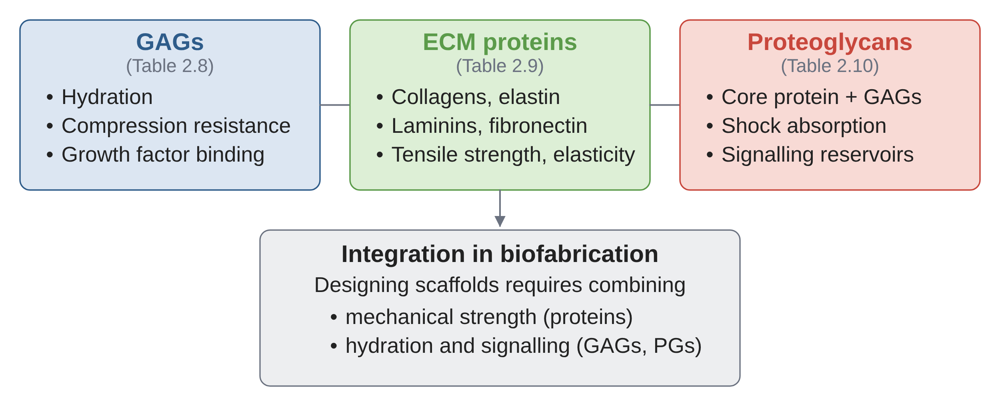
While the core matrisome provides the main structural framework of the ECM, it cannot function in isolation. Tissues require a continuous balance between assembly, stabilisation, degradation, and signalling. This is achieved by the matrisome-associated proteins, which add layers of regulation and adaptability. These proteins control enzymatic remodelling (e.g. MMPs and LOX), provide additional interaction modules (e.g. galectins, collectins), and supply key signalling factors (e.g. VEGF, TGFβ). Together, they transform the ECM from a passive scaffold into a dynamic microenvironment that is constantly remodelled to support tissue development, repair, and disease processes (Figure 2.25).
Figure 2.25 gives this regulatory part of the matrisome the same treatment. Its bar (Figure 2.25A) divides the 753 matrisome-associated genes into 238 ECM regulators, 171 ECM-affiliated proteins and 344 secreted factors. Galectin-3 (Figure 2.25B) is an ECM-affiliated protein whose carbohydrate-recognition domain binds β-galactosides on ECM glycoproteins without itself being structural. The VEGF-A isoforms (Figure 2.25C) show how alternative splicing sets the matrix binding of a secreted factor: VEGF-A₁₂₁ lacks the heparin-binding exons and diffuses freely, VEGF-A₁₆₅ is partly bound to heparan sulfate, and VEGF-A₁₈₉ is strongly matrix-bound and released only by proteolysis. MMP-2 (Figure 2.25D) represents the ECM regulators, with a pro-domain that keeps it latent, a Zn²⁺-dependent catalytic domain and a haemopexin-like domain. The matrix therefore not only stores signals but also controls when they are released.
Matrisome proteins also contain specialised domains that drive their functions. For example, RGD motifs in fibronectin bind to integrins for cell adhesion (Figure 2.24D), while MMPs contain catalytic domains that cleave specific ECM proteins (Figure 2.25D). Together, Figure 2.24 and Figure 2.25 illustrate that the ECM is not only made of structural macromolecules, but also of regulatory and signalling proteins, making it a highly dynamic system.
These molecular and systems perspectives explain the toolkit cells use to build ECM. The next step is to see how these molecules assemble into distinct supramolecular architectures — basement membranes and interstitial matrices — which determine tissue-specific mechanics and biology.
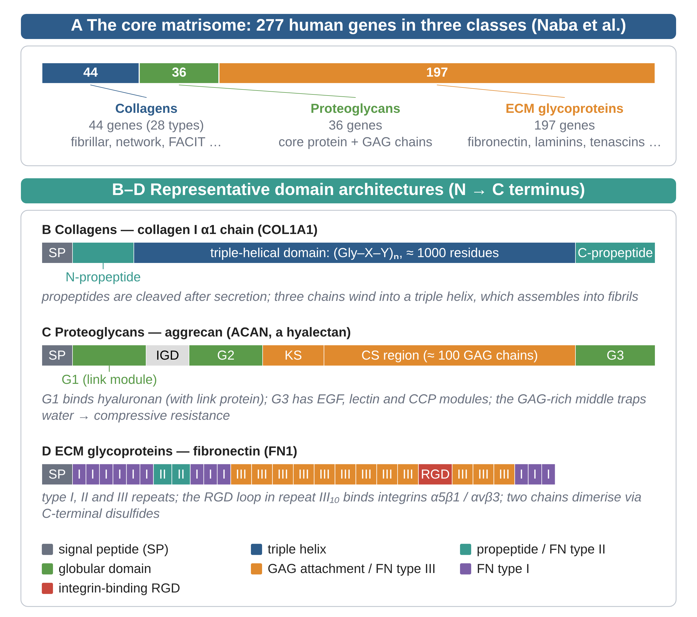
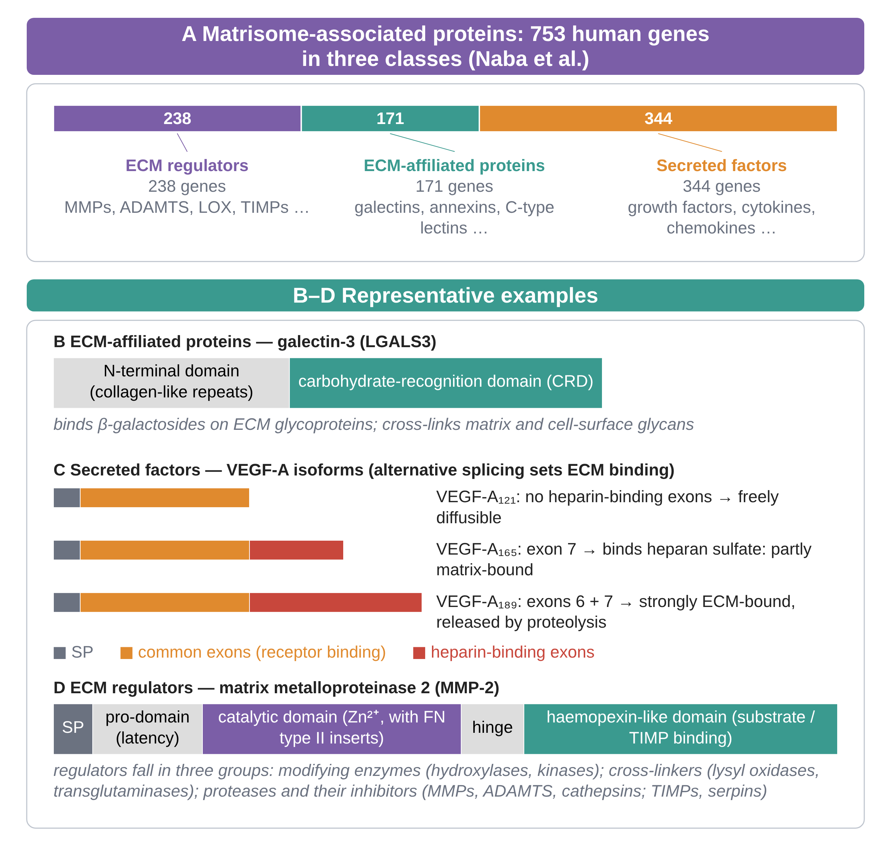
2.2.2.3 Diversity of ECM architectures
After examining the ECM at the molecular and systems level, we now turn to its architectural organisation. ECM molecules assemble into two principal supramolecular structures — basement membranes and interstitial matrices — each with distinct composition, structure, and biological roles (Figure 2.26):
Basement membranes:
Thin, sheet-like structures built mainly from collagen IV, laminins, nidogen, agrin, and perlecan.
Found beneath epithelia and endothelia, and around muscle fibres and Schwann cells.
Provide mechanical support, act as selective barriers, and maintain cell polarity.
Critical for stem cell niches, controlling cell behaviour and differentiation.
Interstitial ECM:
Fibrillar, porous networks composed of collagens I, II, III, V, together with fibronectin, elastin, and fibrillins.
Found throughout connective tissues, giving them strength, elasticity, and space for cell migration.
Central in wound healing, fibrosis, and cancer progression, where remodelling of interstitial ECM can strongly affect tissue function.
These two ECM types (Figure 2.26) illustrate how the same core molecules assemble into very different architectureswith distinct mechanical and biological roles.
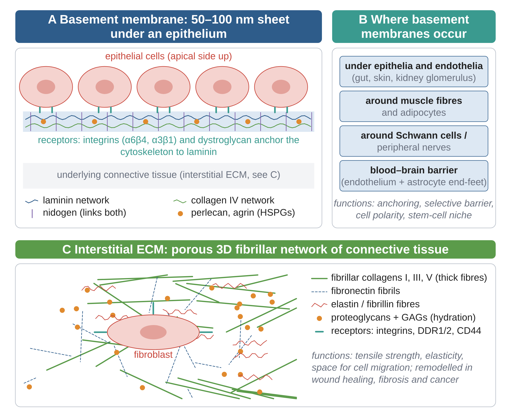
Basement membranes — thin, sheet-like matrices rich in collagen IV, laminins, nidogen, agrin, and perlecan, providing mechanical support, selective barriers, and stem cell niches.
Interstitial ECMs — 3D fibrillar networks rich in collagens I, III, V, fibronectin, proteoglycans, and GAGs, giving tissues tensile strength, elasticity, and space for migration.
Cell–ECM interactions differ: basement membranes connect cells to the cytoskeleton via integrins and dystroglycan, while interstitial ECMs engage integrins, DDRs, and CD44 to regulate adhesion, migration, and mechanosensing.
Basement membranes are found at epithelial and endothelial interfaces (e.g. blood–brain barrier, Schwann cell ensheathment), while interstitial ECMs dominate connective tissues.
For biofabrication, distinguishing these architectures is essential: organoids typically require basement membrane-like scaffolds, whereas engineered bone, cartilage, and connective tissues depend on fibrillar interstitial ECMs.
Recognising these architectural differences is essential for biofabrication: organoid cultures depend on basement membrane–like environments, while engineered bone and cartilage require interstitial matrix–like scaffolds. The following subsection explores this relevance for biofabrication explicitly.
2.2.2.4 Relevance for biofabrication
For biofabrication, understanding the ECM is not only a matter of biology but also of design principles: the choice of molecules, their systems interactions, and their architectural organisation directly inform how we create scaffolds, bioinks, and tissue models:
Molecular level — the building blocks (e.g. collagen, HA) define mechanics and hydration.
Matrisome systems view — shows that regulators, enzymes, and growth factors must be considered alongside structural molecules.
Architectural level — highlights that different tissues require distinct ECM types (e.g. basement membrane-like matrices for organoids; interstitial fibrillar ECMs for bone or cartilage).
This integrated perspective guides the rational design of ECM mimics, ensuring that engineered tissues reproduce both the mechanics and signalling environments of native tissues.
The layered view of molecules, systems, and architectures outlined in this section is summarised in Figure 2.27, which illustrates how the ECM provides a hierarchical blueprint for biofabrication.
Taken together, the ECM can be viewed as a hierarchy of molecules, organised into a systems-level matrisome, and assembled into distinct architectures that together determine tissue function — and provide the blueprint for biofabrication.
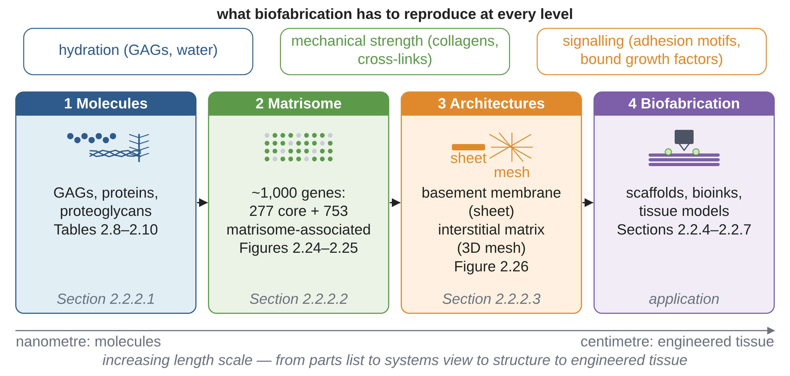
2.2.3 The tissue repartition of ECM components
Although the extracellular matrix (ECM) is built from common molecular components, its composition and organisation vary strongly between tissues. This tissue-specific repartition of ECM molecules gives each organ its unique mechanical (Table 2.11) and biological properties (Frantz et al., 2010; Karamanos et al., 2021).
Bone: The ECM of bone is composed of collagen type I fibres mineralised with hydroxyapatite crystals. This combination provides both tensile strength (from collagen) and compressive stiffness (from mineralisation). Small proteoglycans such as decorin regulate collagen fibril spacing, while osteocalcin and osteopontin help mineral binding.
Cartilage: Cartilage ECM is rich in collagen type II and aggrecan. Aggrecan binds to hyaluronic acid and forms large, hydrated aggregates that resist compression. This makes cartilage especially suited for joints, where mechanical load is frequent.
Basement membranes: These specialised ECM sheets separate epithelial or endothelial cells from the underlying connective tissue. They contain collagen type IV, laminin, nidogen, and perlecan. Basement membranes act as selective barriers, influence cell polarity, and guide cell migration.
Skin dermis: The dermal ECM is rich in collagen types I and III, giving tensile strength, while elastin fibres provide elasticity. Proteoglycans such as dermatan sulfate help regulate hydration and flexibility.
Lung: Lung ECM contains high levels of elastin and collagen, enabling repeated stretching and recoiling during breathing. Proteoglycans modulate the diffusion of gases and growth factors across alveolar structures.
This differential distribution of ECM components explains why tissues respond differently to mechanical stress, injury, and disease. For instance, fibrosis is characterised by excessive deposition of collagen I, while cartilage degeneration in osteoarthritis involves the breakdown of aggrecan.
These differences in composition translate into very different stiffnesses, quantified by Young’s modulus (Box 2.5) and summarised in Figure 2.28. Figure 2.28A defines the quantity: a sample of original length L₀ and cross-section A pulled by a force F elongates by ΔL, and E is the ratio of stress (F/A) to strain (ΔL/L₀). On a stress–strain curve (Figure 2.28B), E is the slope of the initial linear region, so a soft material deforms more than a stiff one under the same stress. Figure 2.28C places the tissues of Table 2.11 on a logarithmic scale, from brain at the soft end to bone at the stiff end, eight orders of magnitude apart, and shows that hydrogels cover only the soft range, whereas synthetic polymers such as PLGA and PCL and metals such as titanium lie at the stiff end. No single material can therefore mimic every tissue, a point that returns when bioinks are compared (Figure 2.32).
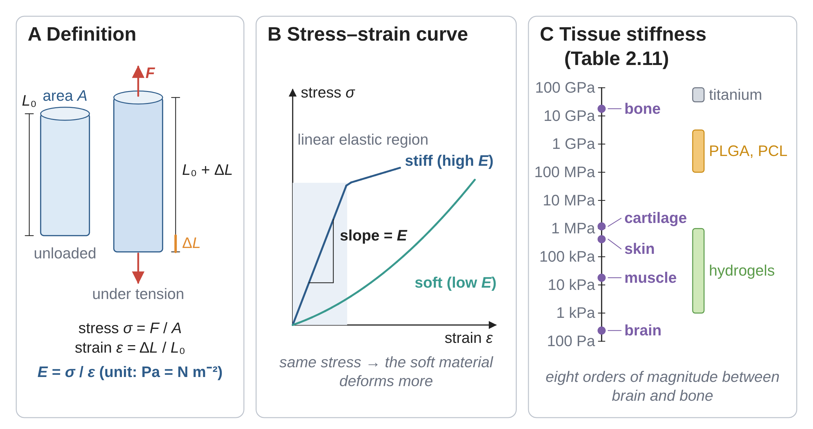
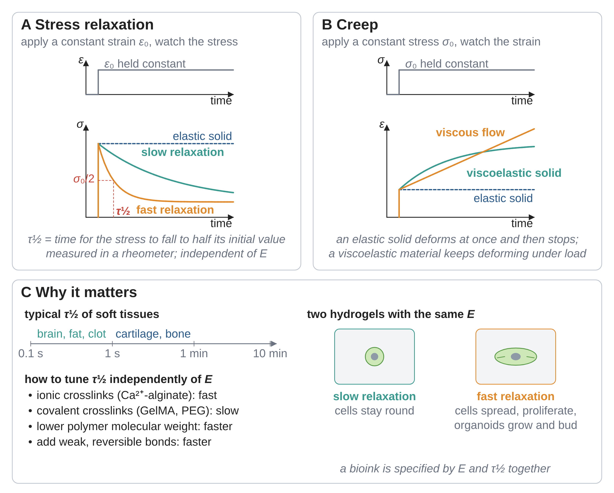
2.2.4 Natural ECM for biofabrication
One way to create a biomimetic environment for cells is to use natural extracellular matrix (ECM) directly harvested from tissues (Figure 2.30). This approach is attractive because the ECM already contains the biochemical cues and structural organisation that cells need for survival, growth, and differentiation (Josino and Stimamiglio, 2024; McInnes et al., 2022).
The most common strategy is decellularisation. In this process, cells are removed from tissues or organs, leaving behind only the ECM scaffold. Methods include:
Detergents (e.g. Triton X-100, SDS) to lyse and wash away cells.
Enzymes (e.g. DNase, trypsin) to digest cellular material.
Physical methods such as freeze–thaw cycles or high-pressure perfusion.
The resulting decellularised ECM (dECM) preserves the 3D architecture and many of the native proteins, proteoglycans, and growth factor binding sites. Depending on the tissue of origin, dECM can be processed into hydrogels, powders, or bioinks for 3D bioprinting (Crapo et al., 2011; Pati et al., 2014).
Figure 2.30 shows what decellularisation removes and what it leaves behind. In native tissue (Figure 2.30A), cells are embedded in a network of collagen fibres, elastin and proteoglycans that holds bound growth factors. After chemical, physical and enzymatic treatment, usually in combination, the cells, nuclei, DNA and membranes are gone (Figure 2.30B), whereas the fibre architecture and the bound growth factors remain as an acellular scaffold. The lower part of the figure shows that whole organs such as kidney, lung and heart are decellularised by perfusing the solutions through their own vessels or airways, whereas bone, cartilage, brain and nerve are treated by immersion. The resulting dECM can be reseeded with patient-derived cells or processed further into hydrogels and bioinks (Section 2.2.6).
Examples include:
Cardiac dECM supporting cardiomyocyte adhesion and function.
Cartilage dECM promoting chondrogenic differentiation of stem cells.
Liver dECM retaining growth factors that improve hepatocyte survival and metabolic activity.
The main challenges are ensuring that all cell remnants (DNA, membrane fragments) are removed — to avoid immune reactions — while preserving ECM integrity. Excessive processing can damage collagen networks or deplete signalling molecules.
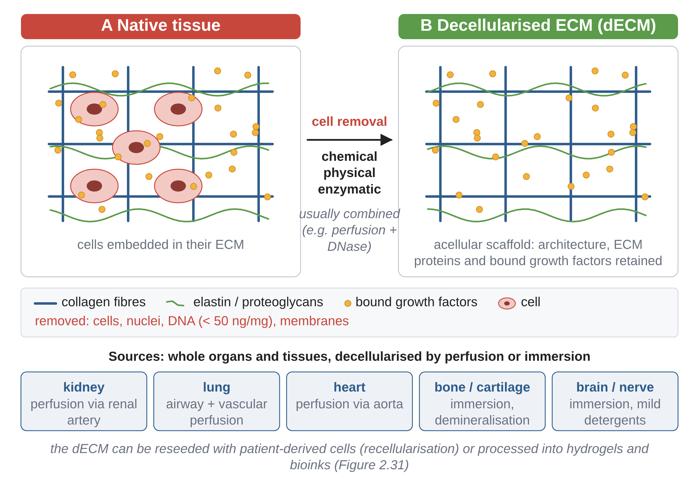
2.2.5 Synthetic ECM for biofabrication
While natural ECM offers unmatched biological relevance, it suffers from several drawbacks: batch-to-batch variability, limited availability, and potential immune responses. To address these challenges, researchers have developed synthetic ECM mimics that provide a more controlled and reproducible environment for cell culture (Gjorevski et al., 2016; Lutolf and Hubbell, 2005).
Synthetic ECMs are typically built from biocompatible polymers that can be tuned for specific mechanical and biochemical properties:
Polyethylene glycol (PEG) hydrogels are inert but can be functionalised with cell-binding peptides (e.g. RGD motifs) to support adhesion.
Self-assembling peptides form nanofiber networks that resemble natural ECM fibrils.
Polyvinyl alcohol (PVA) and poly(lactic-co-glycolic acid) (PLGA) are used for biodegradable scaffolds.
The main advantage of synthetic ECMs is their tunability:
Stiffness can be adjusted to match tissue mechanics (soft brain vs. stiff bone).
Porosity can be engineered to regulate nutrient and oxygen diffusion.
Biochemical cues can be incorporated with precision, such as growth factor–binding sites or enzyme-degradable sequences.
A powerful strategy to add biochemical specificity is the incorporation of cell-adhesion peptide (CAP) motifs. These are short amino acid sequences derived from natural ECM proteins that are recognised by integrins on the cell surface. CAP motifs allow otherwise inert materials to support cell adhesion, spreading, and survival. In addition, synthetic ECMs can include protease-sensitive sequences that mimic natural ECM remodelling by enzymes such as matrix metalloproteinases (MMPs).
Table 2.12 summarises commonly used motifs. Examples include RGD from fibronectin, which broadly supports adhesion across many cell types; IKVAV from laminin, which promotes neural differentiation; and GFOGER from collagen, which supports binding to collagen-specific integrins. Cleavage motifs such as GPQGIWGQK mimic MMP-mediated degradation, enabling dynamic remodelling of synthetic scaffolds.
Together, these adhesive and degradable motifs allow synthetic ECMs to replicate not only the structural but also the functional dynamics of native ECM.
Synthetic matrices are therefore especially valuable for studying cell–matrix interactions in controlled settings. For example, changing only the stiffness of a PEG hydrogel can direct stem cell fate toward neuronal, muscle, or bone lineages (Engler et al., 2006). However, synthetic ECMs often lack the biochemical complexity of native matrices. To overcome this limitation, current efforts focus on combining synthetic scaffolds with natural components such as collagen or decellularised ECM fragments, leading to hybrid systems that merge reproducibility with biological richness.
A practical driver of this work is the replacement of Matrigel, the basement-membrane extract from mouse sarcoma that still supports most organoid cultures. Matrigel is undefined, varies from batch to batch and cannot be used clinically, so defined alternatives — PEG hydrogels with laminin- or fibronectin-derived peptides and MMP-cleavable crosslinks, self-assembling peptide gels, polysaccharide gels (alginate, hyaluronan) and dECM-derived hydrogels — are being developed for intestinal, hepatic and neural organoids (Gjorevski et al., 2016; Wolff and Hendrix, 2025). No single formulation yet matches Matrigel across organoid types, and the need to tune stiffness, degradability and viscoelasticity (Box 2.6) for each tissue is one reason why the hybrid systems of Section 2.2.7 are attracting so much attention.
| Peptide motif | 3-letter sequence | ECM source macromolecule | Function |
|---|---|---|---|
| GFOGER | Gly–Phe–Hyp–Gly–Glu–Arg (O = hydroxyproline) | Collagen I | Integrin-binding (α1β1, α2β1) |
| DGEA | Asp–Gly–Glu–Ala | Collagen I | Integrin-binding (α2β1) |
| YIGSR | Tyr–Ile–Gly–Ser–Arg | Laminin β1 chain | Cell adhesion, spreading |
| IKVAV | Ile–Lys–Val–Ala–Val | Laminin α1 chain | Neuronal differentiation, adhesion |
| RGD / GRGDS | Arg–Gly–Asp / Gly–Arg–Gly–Asp–Ser | Fibronectin, vitronectin, many ECM proteins | Universal integrin-binding motif |
| PHSRN | Pro–His–Ser–Arg–Asn | Fibronectin (synergy site) | Enhances α5β1 binding with RGD |
| VAPG | Val–Ala–Pro–Gly | Elastin | Smooth muscle cell adhesion |
| GDR / GRD | Gly–Asp–Arg | Collagen IV | Integrin-binding |
| MMP cleavage site (GPQGIWGQK↓) | Gly–Pro–Gln–Gly–Ile–Trp–Gly–Gln–Lys | ECM proteins (general) | Cleaved by MMP-1, ECM remodelling |
2.2.6 Decellularised ECM bioinks
One of the most promising uses of decellularised ECM (dECM) is in the form of bioinks for 3D bioprinting. These materials combine the biological fidelity of natural ECM with the spatial control of additive manufacturing.
To prepare a dECM bioink, tissues are first decellularised (see Section 2.2.4) and then processed into a powder. This powder is enzymatically digested into a solubilised form that can be neutralised and gelled under physiological conditions (Pati et al., 2014). The resulting hydrogel can be extruded through a printer nozzle to deposit cells and ECM simultaneously.
Advantages of dECM bioinks include:
Native biochemical cues: dECM retains proteins, proteoglycans, and bound growth factors from the source tissue.
Tissue specificity: dECM derived from cartilage, heart, or liver provides signals tailored to each cell type.
Improved cell viability: cells encapsulated in dECM bioinks often show enhanced survival and differentiation compared to synthetic hydrogels.
Challenges remain in making dECM bioinks suitable for printing. Pure dECM hydrogels are usually mechanically weak and need reinforcement with other polymers (e.g. gelatin, alginate, or PEG) to improve printability and stability (Chimene et al., 2020). In addition, dECM processing must balance complete decellularisation with preservation of ECM bioactivity.
As shown in Figure 2.31, dECM bioinks can be deposited layer by layer to construct tissue-like structures that resemble the architecture and composition of the original organ.
The mechanical weakness of dECM is shared by other biologically rich bioinks, as Figure 2.32 shows by placing all bioink classes on two qualitative axes: mechanical strength or printability horizontally and biological fidelity vertically. Spheroids and organoids and dECM hydrogels sit in the upper left (biomimetic but weak), hydrogels such as alginate, GelMA and PEG in the lower right (strong but biologically simple), and microcarrier-based inks in between. No class reaches the upper-right target of strong and biomimetic on its own. The dashed arrows mark the routes towards it: reinforcing dECM with a stronger polymer or a printed PCL frame (Figure 2.31), adding adhesion and degradation motifs to hydrogels (Table 2.12), choosing bioactive beads, and assembling spheroids in support baths or on needle arrays. Bioink design therefore means combining classes and adding function, which leads to the hybrid and smart bioinks of Section 2.2.7.
The dECM bioinks can be compared to hydrogel-based bioinks, microcarrier-based bioinks, and spheroids/organoids in Table 2.13. Each has its quirks—chemical, mechanical, and biological. Figure 2.32 shows where each bioink type sits in the trade-off space of mechanical strength versus biological fidelity. How such bioinks are printed by inkjet, extrusion or light is the subject of Section 4.4. Four zones can be distinguished:
Weak and inert
Mechanically strong but biologically simple
Biomimetic but weak
Strong and biomimetic: the ideal zone
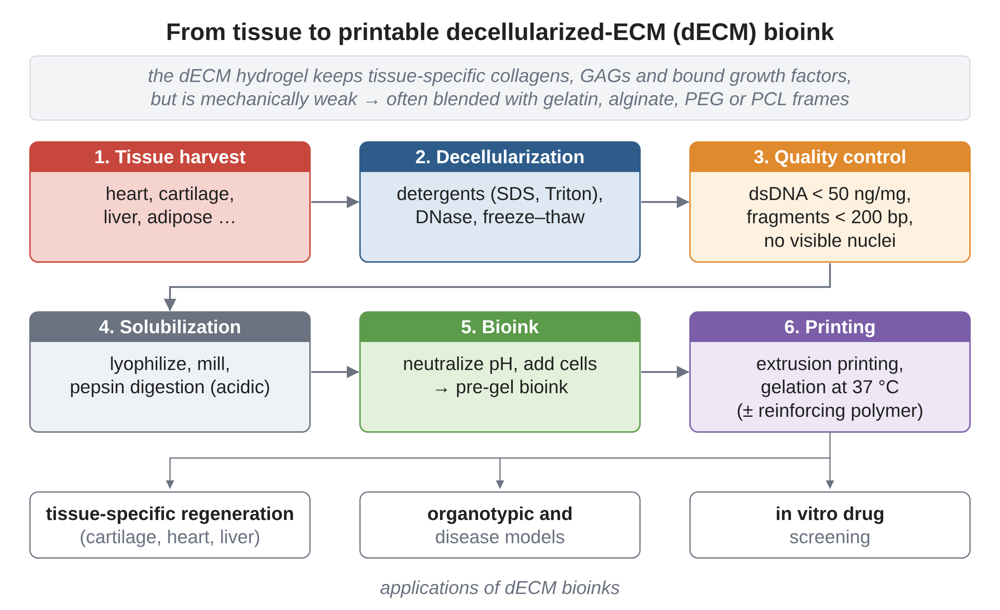
| Bioink type | Chemical composition | Mechanical properties | Biological properties | Typical applications |
|---|---|---|---|---|
| Decellularised ECM (dECM) | Complex mixture of native ECM proteins (collagen, laminin, fibronectin), glycosaminoglycans, tissue-specific growth factors. | Soft, low stiffness; weak structural integrity; often reinforced with polymers (e.g. PCL, nanocellulose). | High biomimicry, tissue-specific cues, supports natural cell differentiation and function. | Tissue-specific regeneration (cartilage, cardiac, liver), organotypic models. |
| Hydrogel-based (alginate, gelatin, GelMA, PEG) | Defined synthetic or natural polymers, can be functionalised (RGD peptides, growth factors) and made photo-cross-linkable (methacrylation). | Tunable stiffness and crosslinking; broad mechanical range from soft gels to strong scaffolds. | Usually bioinert unless modified; provides basic 3D cell support but limited native signalling. | General bioprinting, cartilage/bone models, vascular scaffolds. |
| Microcarrier-based | Solid/semi-solid beads (100–300 µm) (alginate, dextran, hydroxyapatite, polystyrene) embedded in carrier gel. | Improves structural stability and surface area; rheology depends on carrier + particle load. | Supports adherent cell growth and expansion; less biomimetic than dECM. | Large-scale cell expansion, bone/cartilage constructs, hybrid scaffolds. |
Cell aggregates/ spheroids/ organoids |
Pure living cells with self-secreted ECM. | Initially fragile, soft; mechanical strength arises as cells fuse and deposit ECM. | High biological relevance; organoid-like behaviour, strong cell–cell interactions. | Vascularised tissues, organoids, developmental models, self-assembling tissues. |
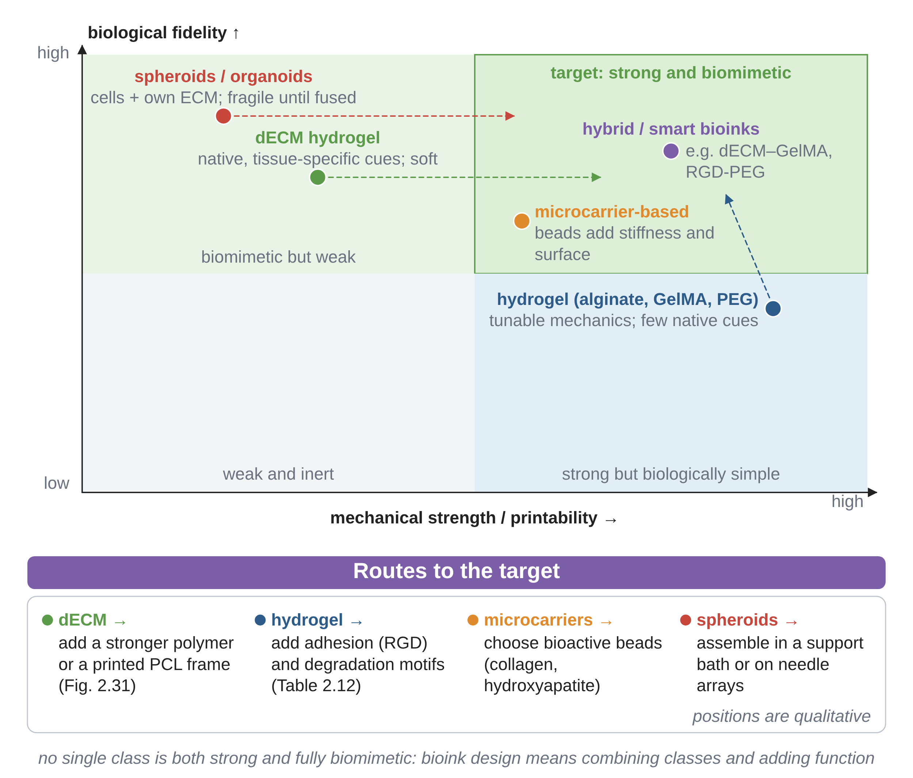
2.2.7 Smart ECM mimics
The next generation of ECM systems goes beyond providing a static scaffold. Instead, smart ECM mimics are designed to respond dynamically to environmental cues, better reflecting the adaptability of natural tissues (Highley et al., 2016; Lutolf and Hubbell, 2005). These materials can alter their physical, chemical, or biological properties in response to stimuli, making them powerful tools for guiding cell growth, differentiation, and tissue organisation.
2.2.7.1 Stimuli-Responsive ECM Mimics
Stimuli-responsive hydrogels are designed to change their properties when exposed to specific cues. This ability makes them especially suited to mimic the dynamic environment of living tissues, where mechanical and biochemical conditions are constantly shifting.
Key examples include:
Temperature-sensitive hydrogels: e.g. polyNIPAAM, which gels at 37°C but liquefies at lower temperatures.
pH-responsive systems: hydrogels that degrade under acidic conditions, useful in modelling tumour microenvironments.
Light-activated gels: photo-crosslinkable systems that allow spatiotemporal precision in crosslinking or degradation.
Enzyme-sensitive matrices: hydrogels cleaved by matrix metalloproteinases (MMPs) secreted by cells, supporting remodelling during tissue growth.
By integrating these features, stimuli-responsive ECM mimics allow researchers to design tissue models and implants that actively adapt to cell activity. Applications range from controlled drug release systems to dynamic organoid cultures, where matrix stiffness and degradation can be tuned in real time.
2.2.7.2 Nanocellulose-Based ECM Mimics
Nanocellulose is a renewable, biocompatible polymer derived from plant or bacterial cellulose. When processed into nanofibers or nanocrystals, it forms fibrous hydrogels with tunable porosity that resemble the structure of native ECM (Lin and Dufresne, 2014). The individual nanofibres and nanocrystals are very strong and stiff, but nanocellulose hydrogels on their own are soft; nanocellulose is therefore used mainly to reinforce softer hydrogels and to make printable composites.
Key advantages include:
High surface area, allowing functionalisation with peptides or growth factors.
Shear-thinning behaviour, making nanocellulose suitable for extrusion-based 3D bioprinting.
Excellent water retention, which supports long-term cell viability.
Nanocellulose hydrogels are under investigation for cartilage repair, wound healing, and bioinks in advanced bioprinting. They can also be blended with ECM proteins to combine mechanical robustness with biochemical specificity (Wang et al., 2020).
2.2.7.3 Hybrid Smart Systems
While stimuli-responsive hydrogels and nanocellulose-based systems each provide distinct advantages, the most promising direction in ECM biofabrication is the development of hybrid smart systems. These combine natural ECM components (such as collagen, gelatin, or decellularised ECM fragments) with synthetic polymers that provide tunability and dynamic responsiveness.
The goal of hybrid systems is to integrate the biochemical fidelity of natural ECM with the mechanical strength and controllability of synthetic materials. For example, natural ECM proteins can supply binding sites for integrins, while synthetic elements allow fine-tuning of stiffness, degradation, or growth factor release.
Hybrid approaches also enable the design of adaptive scaffolds that evolve with the cells: they may stiffen as tissue matures, degrade in response to enzymatic cues, or release growth factors in controlled pulses. This adaptability makes them particularly suited for personalised bioinks, where material composition can be tailored to a patient’s own cell types and regenerative needs.
By merging biological relevance with engineered functionality, hybrid smart systems represent a bridge between current ECM mimics and truly next-generation biofabrication materials (Figure 2.33) (Table 2.14).
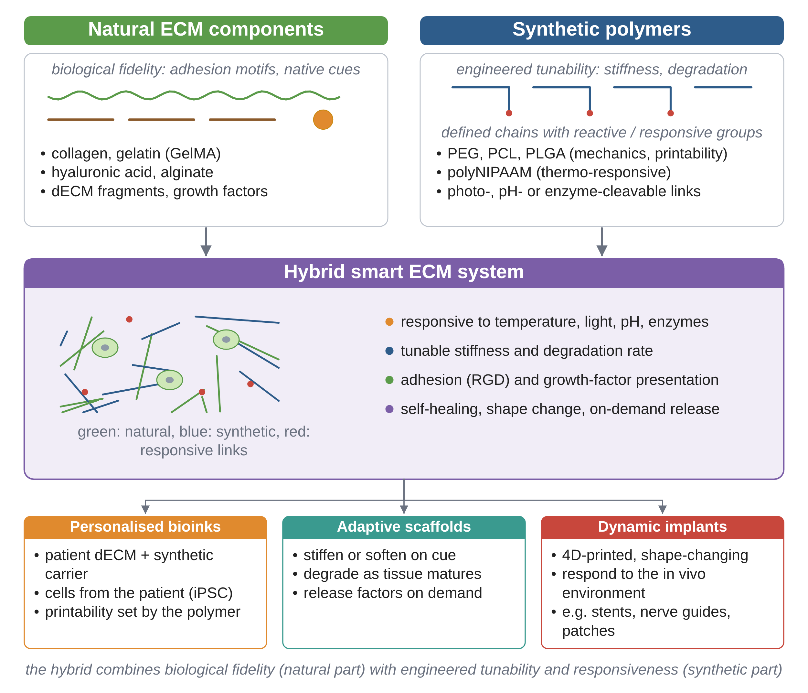
| Type of ECM mimic | Key property | Example application |
|---|---|---|
| Stimuli-responsive hydrogels | Change properties in response to temperature, pH, light, or enzymes. | Controlled drug release, tumour microenvironment modelling, dynamic organoid cultures, responsive scaffolds. |
| Nanocellulose hydrogels | Strong, fibrous, water-rich network mimicking collagenous ECM; shear-thinning (prints, then recovers) with tunable ionic or covalent cross-linking; surface carboxyl groups give pH-responsive swelling and allow grafting of responsive polymers. | Cartilage repair, wound healing, long-term bioinks for 3D bioprinting, tendon-like constructs. |
| Hybrid smart systems | Combine natural ECM components with synthetic polymers for tunability. | Personalised bioinks, adaptive scaffolds that stiffen or degrade in response to cells, dynamic implants. |
2.2.7.4 Outlook
Smart ECM mimics represent a step toward dynamic biomaterials that actively interact with cells instead of passively supporting them. By integrating stimuli-responsive polymers with nanocellulose-based systems, researchers aim to design next-generation bioinks that adjust their structure, stiffness, or biochemical presentation in real time.
As summarised in Table 2.14, these materials combine the tunability of synthetic systems with the biological relevance of natural ECM, offering unprecedented control over cell fate and tissue development. The future direction of ECM biofabrication lies in creating hybrid systems that merge the best features of synthetic, natural, and smart materials to enable:
Dynamic environments that adapt to cell behaviour.
Tissue-specific bioinks for organoid and organ-on-chip applications.
Scalable fabrication methods compatible with high-throughput platforms.
Clinical translation, where safety, reproducibility, and regulatory compliance are essential.
To put these developments into perspective, Table 2.15 and Table 2.16 compare the main categories of ECM materials used in biofabrication. Table 2.15 contrasts natural ECM, synthetic ECM, decellularised ECM, and smart ECM mimics, highlighting their strengths and limitations. Table 2.16 provides a more detailed comparison between decellularised ECM bioinks and smart ECM mimics, emphasising differences in source, composition, biological fidelity, and adaptability.
As summarised in Figure 2.34, bioink design has evolved from simple hydrogels toward smart ECM mimics that integrate tunability, responsiveness, and biomimicry. This trajectory reflects a shift from inert materials to dynamic, cell-interactive matrices, laying the groundwork for future hybrid systems.
| Type | Examples | Advantages | Limitations/Challenges |
|---|---|---|---|
| Natural ECM | Collagen, hyaluronic acid, fibrin | Biocompatible, bioactive | Batch variability, weak mechanics |
| Synthetic ECM | PEG, PLA, PCL | Controlled properties, tunable | May lack bioactivity, immune reactions |
| Decellularised ECM | Porcine small-intestinal submucosa (SIS), cardiac patches | Preserves native complexity | Donor variability, immunogenicity |
| Smart ECM mimics | Stimuli-responsive hydrogels, nanocellulose | Dynamic, renewable feedstock (nanocellulose), responsive | Still experimental, scale-up issues |
| Feature | Decellularised ECM (dECM) bioinks | Smart ECM mimics (stimuli-responsive & nanocellulose-based) |
|---|---|---|
| Source | Derived from natural tissues/organs (cells removed, ECM preserved). | Synthetic or hybrid materials engineered to mimic ECM architecture and function. |
| Composition | Native proteins (collagen, laminin, fibronectin), GAGs, tissue-specific growth factors. | Stimuli-responsive polymers (polyNIPAAM, PEG derivatives, photo/pH/enzyme-cleavable linkers) and nanocellulose (CNC, CNF, BNC). |
| Biological cues | High, tissue-specific signalling; supports natural differentiation. | Tunable; can incorporate defined peptides, growth factors, and dynamic biochemical signals. |
| Mechanical properties | Soft, weak gels; poor structural stability; require reinforcement. | Tunable stiffness, reinforced by nanocellulose; responsive to stimuli; improved printability. |
| Adaptability | Static microenvironment after printing. | Dynamic microenvironment—adapts to physical, chemical, or biological cues. |
| Applications | Tissue-specific regeneration, organotypic models. | Programmable scaffolds for dynamic tissue models, wound healing, fibrosis, cancer invasion, adaptive implants. |
| Limitations | Limited reproducibility, weak mechanics, batch-to-batch variability. | Less biologically “authentic” than native ECM; more complex chemistry, regulatory hurdles. |
2.2.8 Conclusion
Scaffold-free and ECM-based strategies represent two complementary approaches to biofabrication. Scaffold-free methods rely on the intrinsic ability of cells to self-organise and generate their own ECM, producing constructs that closely mimic natural tissue development. ECM-based approaches, in contrast, provide engineered environments — ranging from natural and decellularised matrices to synthetic and smart ECM mimics — that supply cells with structural and biochemical guidance.
As summarised in Table 2.15 and Table 2.16, and illustrated in Figure 2.34, there is a clear trajectory from static biomaterials toward dynamic, hybrid systems that combine biological fidelity with synthetic tunability. This evolution reflects the field’s movement toward adaptive bioinks and scaffolds that not only support cells but actively interact with them during tissue formation.
Figure 2.34 condenses this trajectory into three generations of bioinks, each rated with qualitative bars for mechanics, biology and adaptability. First-generation hydrogel bioinks of alginate, gelatin/GelMA or PEG score high on mechanics but low on the other two: they are printable and tunable but offer cells little more than passive 3D support. Second-generation dECM bioinks reverse this profile, supplying native proteins, GAGs and bound growth factors but remaining soft and static once printed. Only the third generation of smart and hybrid ECM mimics, built from stimuli-responsive polymers, nanocellulose and natural components, scores high on all three. Read from left to right, the figure shows how each generation has added what the previous one lacked.
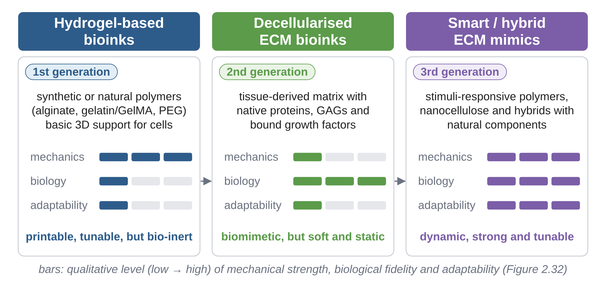
2.3 Summary
Scaffold-free biofabrication uses the intrinsic ability of cells to self-organise and produce their own ECM, avoiding problems with synthetic scaffolds.
Bioreactors provide the controlled environments needed for cell expansion, nutrient supply, and mechanical stimulation, supporting the maturation of scaffold-free constructs.
Cells can be assembled into tissues through spheroids, organoids, cell sheets, and moulds, which serve as essential building blocks for complex constructs.
Spheroids model cartilage, tumours, and other tissues, while organoids replicate organ-specific functions and are valuable for drug discovery and personalised medicine.
The extracellular matrix (ECM) is a dynamic, tissue-specific network that regulates both mechanical properties and cell signalling.
Natural ECM (decellularised tissues) preserves biological cues but lacks reproducibility; synthetic ECMs are tunable and scalable but often less biomimetic.
Decellularised ECM bioinks and smart ECM mimics (stimuli-responsive, nanocellulose-based) represent the frontier, combining biological fidelity, tunability, and adaptability.
Future biofabrication will rely on hybrid strategies that merge scaffold-free cellular self-organisation with advanced ECM engineering for more predictive in vitro models and functional implants.
Figure 2.35 summarises the two main biofabrication strategies — scaffold-free (driven by cellular self-organisation) and ECM-based (using natural, synthetic, or engineered matrices) — and shows how both approaches converge toward key applications in biomedicine.
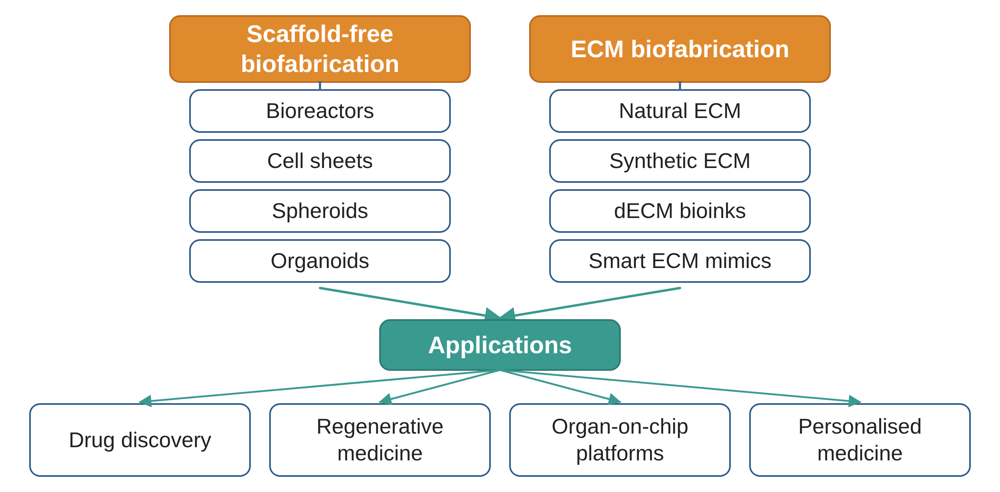
Looking ahead. Chapter 3 moves from biology to fabrication: it shows how surface treatment, lithography, soft lithography and microfluidics shape the micro-environment of cells, from patterned culture surfaces to organ-on-chip and body-on-chip systems.
2.4 Exercises
Table 2.17 gives an overview of the exercises in this chapter: the conceptual, quantitative and computational exercises, what each block focuses on, and the section in which the background for each exercise is found.
| Block | Focus | Exercises (section) |
|---|---|---|
| Block 1: Scaffold-free & Multicellular Constructs (Exercises 1–5) | How tissues can self-assemble without scaffolds. | 1. Scaffold-free concepts (2.1) 2. Bioreactor applications (2.1.2) 3. From single cells to tissue (2.1.3) 4. Spheroids vs. organoids (2.1.5) 5. Methods of spheroid formation (2.1.5) |
| Block 2: Extracellular Matrix & the Matrisome (Exercises 6–14) | Molecular, systems and architectural view of the ECM. | 6. GAG functions (2.2.2) 7. Proteins and signalling (2.2.2) 8. Proteoglycan roles (2.2.2) 9. Matrisome classification (2.2.2) 10. Figure 2.24–Figure 2.25 – interpreting the matrisome (2.2.2) 11. ECM architectures (2.2.2) 12. Figure 2.26 – interpreting ECM architectures (2.2.2) 13. Biofabrication relevance (2.2.4) 14. Visual task – labelling the matrisome (2.2.2) |
| Block 3: Applied ECM in Biofabrication (Exercises 15–21) | Applying ECM knowledge to design bioinks and scaffolds. | 15. ECM composition (2.2.3) 16. Tissue-specific ECM (2.2.3) 17. Natural vs. synthetic ECM (2.2.4–2.2.5) 18. dECM bioinks (2.2.6) 19. Smart ECM mimics (2.2.7) 20. Comparing ECM strategies, Table 2.15 (2.2.7) 21. Bioink evolution, Table 2.13 and Figure 2.32 (2.2.6) |
| Integration (Exercises 22–23) | Connecting cell behaviour, ECM composition and biofabrication design. | 22. Figure 2.35 – comparing biofabrication strategies (2.3) 23. ECM molecules overview, Figure 2.23 (2.2.2) |
| Quantitative / Applied (Exercises Q1–Q4) | Short calculations on spheroids and ECM materials. | Q1. Diffusion limit of a spheroid (2.1.5) Q2. How many cells in a spheroid? (2.1.5) Q3. Reading stiffness from data (2.2.3) Q4. Decellularisation quality control (2.2.6) |
| Computational, Google Colab: interactive (Exercise 1) | Widget-driven decision tools; no programming required. | 1. Decision tools for scaffold-free biofabrication: method, matrix and bioreactor (2.1) |
| Computational, Google Colab: Python (Exercises 1–5) | Notebooks in which the Python code is read and modified. | 1. Spheroid growth kinetics (2.1.5) 2. ECM composition and mechanical properties (2.2.2, 2.2.5) 3. Bioreactor scale-up analysis (2.1.2) 4. Bioink property comparison (2.2.6) 5. Nutrient diffusion and cell viability (2.1.5) |
2.4.1 Conceptual Exercises
The conceptual exercises are designed as a progression: starting from scaffold-free cellular assembly (Block 1), moving through the molecular and systems view of the ECM (Block 2), and culminating in applied ECM strategies for biofabrication (Block 3) (Table 2.17). The final integration tasks (Exercises 22–23) connect these perspectives, showing how cell behaviour, ECM composition, and biofabrication design converge in modern tissue engineering.
Block 1: Scaffold-free and multicellular constructs
Exercise 1: Scaffold-free concepts
Explain why scaffold-free biofabrication avoids some of the challenges associated with synthetic scaffolds. Mention at least two advantages and two limitations of scaffold-free approaches.
Exercise 2: Bioreactor applications
Describe how bioreactors support scaffold-free tissue engineering. Which parameters can be controlled, and why are these important for tissue maturation?
Exercise 3: From single cells to tissue
Refer to Figure 2.6. How do non-adhesive moulds guide cells into 3D structures? Why is extracellular matrix (ECM) production essential before removing the construct from the mould?
Exercise 4: Spheroids vs. organoids
Compare spheroids and organoids:
How are they formed?
What makes organoids more complex?
Give one application example for each.
Exercise 5: Methods of spheroid formation
Refer to Figure 2.11–Figure 2.14 and 2.19. Match each method (hanging drop, liquid overlay, active rotation, microcarriers, magnetic levitation, emulsion) with its main advantage and main limitation.
Block 2: Extracellular Matrix (ECM) and the Matrisome
Exercise 6: GAG functions
Explain how the negative charge of glycosaminoglycans contributes to tissue properties such as hydration and compressive strength. Give one example where this property is essential (e.g. cartilage, eye, skin).
Exercise 7: Proteins and signalling
Collagens and laminins are often seen as structural molecules. How do they also act as signalling reservoirs for cells? Provide an example of a receptor–ligand interaction (e.g. integrins with fibronectin).
Exercise 8: Proteoglycan roles
Why are proteoglycans (PGs) considered both mechanical shock absorbers and biochemical regulators? Compare their functions in cartilage versus basement membranes.
Exercise 9: Matrisome classification
Describe the difference between the core matrisome and the matrisome-associated proteins. Why is this classification useful for understanding tissue-specific ECMs?
Exercise 10: Figure 2.24 and Figure 2.25 – interpreting the matrisome
Using Figure 2.24 and Figure 2.25, explain how the core matrisome and the matrisome-associated proteins complement each other. Which elements provide structure, which provide regulation, and which act as signalling reservoirs? How does this systems view change the way we think about ECM in biofabrication?
Exercise 11: ECM architectures
Compare basement membranes and interstitial ECMs in terms of (a) composition, (b) structure, and (c) biological function. Which type would you expect to dominate in (i) epithelial organoids and (ii) engineered bone tissue?
Exercise 12: Figure 2.26 – interpreting ECM architectures
Using Figure 2.26, identify the main molecular components of basement membranes and interstitial ECMs.
Label one receptor (e.g. integrin, dystroglycan, CD44, DDR) shown in the figure and explain how it links cells to the ECM.
Explain why basement membranes are especially important for cell polarity and barrier function, while interstitial ECMs are more important for mechanical resilience and cell migration.
Reflection: How would you choose between a basement membrane-like or interstitial-like matrix when designing a biofabricated tissue?
Exercise 13: Biofabrication relevance
Why is it not sufficient to include only collagen in a biofabricated matrix? Discuss how the matrisome perspective changes the way we think about designing biomaterials.
Exercise 14: Visual task – labelling the matrisome
Using Figure 2.24 (core matrisome) and 2.25 (matrisome-associated proteins):
Label the three categories of the core matrisome (collagens, ECM glycoproteins, proteoglycans) directly on the figure. Add one example protein for each (e.g. collagen I, laminin, aggrecan).
Identify the three groups of matrisome-associated proteins (ECM regulators, ECM-affiliated proteins, secreted factors). Add one example molecule for each (e.g. MMPs, galectins, VEGFA).
Highlight (circle or colour-code) one element that provides mainly structure, one that provides regulation, and one that acts as a signalling reservoir.
Reflection: How does this exercise change the way you think about ECM — as a passive scaffold or as a dynamic system?
Block 3: Applied ECM in biofabrication
Exercise 15: ECM composition
List the three main molecular classes of ECM components. Give one example molecule and one function for each class.
Exercise 16: Tissue-specific ECM
How does the ECM differ between bone and cartilage? Which molecules give each tissue its specific mechanical properties?
Exercise 17: Natural vs. synthetic ECM
Compare natural ECM scaffolds (from decellularisation) with synthetic ECM mimics. What are the strengths and weaknesses of each approach?
Exercise 18: dECM bioinks
Explain how decellularised ECM can be processed into a bioink. What challenges must be solved to make dECM suitable for 3D printing?
Exercise 19: Smart ECM mimics
Give two examples of stimuli-responsive materials and explain how they could improve the design of dynamic tissue models.
Exercise 20: Comparing ECM strategies (Table 2.15)
Study Table 2.15. Compare the main advantages and limitations of natural ECM and synthetic ECM. In which situations would each be preferred, and why?
Exercise 21: Bioink evolution (Table 2.13 & Figure 2.32)
Refer to Table 2.13 and Figure 2.32. Explain how decellularised ECM bioinks differ from smart ECM mimics in terms of composition and adaptability. How does Figure 2.32 illustrate the shift toward hybrid smart systems?
Exercise 22: Figure 2.35 – Comparing biofabrication strategies
Using Figure 2.35, compare scaffold-free biofabrication and ECM-based biofabrication:
Which approach relies more on cell self-organisation, and which depends more on materials and scaffolds?
Give one advantage and one limitation of each strategy.
Explain how both approaches can lead to overlapping applications (e.g. drug discovery, regenerative medicine, organ-on-chip platforms, personalised medicine).
Reflection:How could combining scaffold-free and ECM-based strategies provide a more powerful toolkit for future biofabrication?
Integration exercise
Exercise 23: ECM molecules overview – applying the schematic
Use the schematic in Figure 2.23 (ECM molecular classes) to answer the following:
- Identify which ECM class (GAGs, proteins, proteoglycans) is most critical for each property:
a. Tensile strength
b. Hydration and compression resistance
c. Signalling reservoir
- Fill in the blanks:
Collagens, elastin → ______ strength
Hyaluronic acid → tissue ______ and migration
Aggrecan → ______ strength and load-bearing
Reflection: Why would a biofabricated cartilage scaffold need contributions from all three ECM classes rather than just one?
2.4.2 Quantitative / Applied Exercises
Exercise Q1: Diffusion limit of a spheroid. Oxygen enters a spheroid only by diffusion. For a sphere with uniform oxygen consumption rate q (mol m⁻³ s⁻¹), diffusion coefficient D and surface concentration C₀, the centre becomes anoxic when the radius exceeds Rcrit = (6 D C₀ / q)^½. Take D = 2 × 10⁻⁹ m² s⁻¹, C₀ = 0.2 mol m⁻³ (medium in equilibrium with air) and q = 2 × 10⁻² mol m⁻³ s⁻¹ for a dense tumour spheroid. (a) Calculate Rcrit. (b) How does it change if the cells consume oxygen four times more slowly? (c) Relate your answer to the necrotic core observed in tumour spheroids and to the maximum useful size of a scaffold-free building block.
Exercise Q2: How many cells in a spheroid? A spheroid of 400 µm diameter is made of cells with an average diameter of 15 µm and a packing fraction of 0.7. (a) Estimate the number of cells. (b) A hanging-drop plate yields one spheroid per 20 µL drop; how many drops are needed to obtain 10⁸ cells, the order of magnitude needed for a cm³ of tissue? (c) Compare with a spinner flask of 500 mL at 10⁶ cells mL⁻¹ and comment on the throughput problem of passive methods.
Exercise Q3: Reading stiffness from data. A cylindrical hydrogel sample (diameter 8 mm, height 4 mm) is compressed by 0.2 mm under a force of 0.05 N. (a) Calculate the stress, the strain and Young’s modulus. (b) Which tissue in Table 2.11 has a similar modulus? (c) The same gel shows a stress-relaxation half-time of 30 s. Using Box 2.6, predict whether mesenchymal stem cells encapsulated in it are more likely to spread and proliferate than in a gel of equal modulus with τ½ = 30 min.
Exercise Q4: Decellularisation quality control. A batch of decellularised porcine cartilage contains 120 ng of double-stranded DNA per mg of dry ECM, with fragments of 150 bp. (a) Does the batch meet the criteria in the caption of Figure 2.31? (b) Which of the two quantitative criteria (DNA content and fragment length) is failed, and what processing step would you change? (c) Why does residual DNA matter for an implant but much less for an in vitro drug-screening model?
2.4.3 Computational Exercises — Interactive (Google Colab)
The exercises in this section are supported by interactive Python notebooks running in Google Colab. This environment allows calculations and simulations to be performed directly in the browser, without local software installation.
Each notebook is structured as a self-contained, executable module with explanations, parameterisable models and graphical visualisations. The exercises are designed to quantitatively analyse the theoretical concepts in this chapter and deepen process insight. The notebooks can be opened and executed directly via the provided Colab links. Section 2.4.3 contains one notebook with three widget-driven decision tools that require no programming; Section 2.4.4 contains five notebooks in which the Python code itself is read and modified.
2.4.3.1 Exercise 1 — Decision Tools for Scaffold-free Biofabrication: Method, Matrix and Bioreactor
Problem Statement
Before a single cell is cultured, three decisions shape a scaffold-free biofabrication process: which spheroid-formation method to use, which extracellular matrix to provide, and in which bioreactor to expand the cells. This exercise turns the comparative tables of Chapter 2 into three interactive decision tools. Each tool scores the available options against user-defined requirements — application, production scale, budget and skill level — and shows which options are feasible and which one scores best. The purpose is not to obtain “the” answer but to see how the ranking changes when the requirements change.
The engineering challenge is to understand the trade-offs between:
throughput, uniformity and cost per spheroid across the six formation methods (Section 2.1.5.1–2.1.5.8, Table 2.6),
biological fidelity and cost of natural, synthetic and hybrid ECM formulations for a given target tissue (Section 2.2.3–2.2.5, Table 2.8–Table 2.11 and 2.15),
and oxygen supply, shear stress, cell density and cost in the choice of a bioreactor (Section 2.1.2, Figure 2.4).
The notebook contains three interactive simulations, each with adjustable parameters:
Spheroid Formation Method Comparison — hanging drop, liquid overlay, spinner flask, microcarrier beads, magnetic levitation and emulsion are scored for drug screening, tissue engineering, disease modelling, academic research or clinical production, under constraints of production scale (100s to 10,000s of spheroids), budget and operator skill (Section 2.1.5),
ECM Composition Analyzer — the composition of six tissues (bone, cartilage, dermis, basement membrane, lung alveoli, blood-vessel wall) is translated into material costs for a natural, synthetic or hybrid formulation at research (10 g) to commercial (10 kg) scale, with a minimum performance requirement (Section 2.2),
Bioreactor Design Optimiser — for chondrocytes, fibroblasts, mesenchymal stem cells, hepatocytes or cardiomyocytes, a culture volume of 0.1–1,000 L and a duration of 1–21 days, the tool computes the metabolic demand and medium consumption and ranks stirred-tank, spinner-flask, wave and perfusion systems within a given budget (Section 2.1.2).
Learning Outcomes
After completing this exercise, you should be able to:
Translate an application into weighted selection criteria and apply feasibility constraints before ranking options.
Explain why the best spheroid-formation method for drug screening differs from the best method for disease modelling.
Estimate the raw-material cost of a tissue-mimetic ECM and identify which components dominate it.
Compare natural, synthetic and hybrid ECM strategies in terms of cost and expected performance.
Calculate the oxygen and medium demand of a cell culture from cell density, volume and specific consumption rates.
Select a bioreactor type on the basis of volume range, achievable density, shear sensitivity and budget.
Theoretical Background
1) Weighted method score. For each application the tool defines priorities \(w_{T}\), \(w_{U}\) and \(w_{C}\) (1–10) for throughput, uniformity and cost. A method is feasible only if its set-up cost fits the budget, its skill requirement does not exceed the operator’s skill and its scalability meets the production scale. For feasible methods,
\[S = \frac{w_{T}\, s_{T} + w_{U}\, s_{U} + w_{C}\, s_{C}}{w_{T} + w_{U} + w_{C}}\]
where \(s_{T} = min\left( 10,\,\text{throughput} \times \text{scale}/1000 \right)\), \(s_{U}\) is the uniformity score (1–10) and \(s_{C} = 10 - 20\, c_{sph}\) with \(c_{sph}\) the cost per spheroid in dollars.
2) ECM material cost. For a batch of total mass \(M\) and a tissue whose composition assigns a mass percentage \(x_{i}\) to component \(i\) with unit cost \(c_{i}\) (dollars per gram),
\[C_{nat} = \sum_{i}^{}M\,\frac{x_{i}}{100}\, c_{i}\]
In the synthetic strategy, components with a synthetic analogue (collagen I → PEG–RGD, collagen II → chitosan, elastin → polyurethane elastomer, fibronectin → RGD peptide, hyaluronic acid → PEG hydrogel) are replaced at a fraction \(k_{i}\) (0.1–0.4) of the natural cost but with a performance factor \(\phi_{i}\) (0.5–0.8); the hybrid strategy replaces half of each major component (\(x_{i} > 5\,\%\)).
3) Metabolic demand and medium consumption. For a culture of volume \(V\) (L) at the optimal density \(\rho\) (cells mL⁻¹) of the chosen cell type, the number of cells is \(N = 1000\, V\rho\) and the oxygen demand is
\[Q_{O_{2}} = N\, q_{O_{2}}\]
with \(q_{O_{2}}\) the specific consumption rate (0.6–2.5 µmol per 10⁶ cells per hour). With a medium exchange every 48 h and a 50 % safety margin, a culture of duration \(t\) (days) consumes \(V_{med} = 1.5\, V\,(24\, t/48)\) litres of medium.
4) Bioreactor feasibility and performance. A reactor is retained if \(V\) lies in its volume range, \(\rho\) does not exceed its maximum density, its shear compatibility \(10 - \left| s_{cell} - s_{reactor} \right| \geq 3\) (shear sensitivity and shear level on a 1–10 scale) and its cost \(V\, c_{L}\) does not exceed 70 % of the budget. Its performance is the mean of the oxygen-transfer score, the mixing score and the shear compatibility.
Model Assumptions
The tools are intentionally simplified to emphasise decision logic:
Method and reactor characteristics are single representative values on 1–10 scales, not measured distributions.
Costs are material and equipment costs only; labour, quality control and regulatory costs are excluded.
Tissue compositions are approximate mass percentages compiled from Table 2.8–Table 2.11; water and mineral content are treated as separate entries.
Oxygen demand is compared with a reactor’s qualitative oxygen-transfer score rather than with a measured \(k_{L}a\) (see Exercise 3 of Section 2.4.4 for the quantitative treatment).
Despite these simplifications, the tools reproduce the qualitative conclusions of Table 2.6 and Table 2.15: passive methods win on uniformity, active methods on throughput, natural ECM on fidelity, synthetic ECM on cost, and perfusion systems on density but not on scale.
Digital Exercise (Google Colab)
This exercise is performed in an interactive Python notebook.
No local installation is required; the simulation runs entirely in the cloud. Scan the QR code or click the link below.
Launch Interactive Exercises in Google Colab
Tasks and Questions
For each interactive simulation, adjust the controls, observe the output, and answer the corresponding questions.
Simulation 1 — Spheroid Formation Method Comparison
Start with drug screening at laboratory scale, a medium budget and graduate skill level. Which method scores best, and which methods are excluded by the constraints? Explain each exclusion.
Change the application to disease modelling. Why does the ranking change even though the methods and constraints are the same? Relate the answer to the uniformity priority.
Move to commercial scale. Which methods now become infeasible and why? Compare the result with the passive/active classification of Table 2.3.
The cost score is \(s_{C} = 10 - 20\, c_{sph}\). What happens to a method with a cost per spheroid above $0.50? Propose a better normalisation.
Simulation 2 — ECM Composition Analyzer
For cartilage at research scale, compare the cost of the natural, synthetic and hybrid strategies. Which components dominate the natural cost, and why is the saving of the synthetic strategy limited?
Repeat for the basement membrane. Why is this tissue by far the most expensive to mimic per gram? Which of the four ECM classes of Table 2.15 would you choose for it, and why?
Raise the minimum performance requirement from 0.8 to 1.0. Which strategies survive? Discuss what “performance 0.7” for PEG–RGD versus collagen I means physically (Section 2.2.5, Table 2.12).
Scale up to 10 kg. Does the cost per gram change in the model? What economies of scale exist in reality, and for which components (recombinant proteins, dECM, synthetic polymers) are they largest?
Simulation 3 — Bioreactor Design Optimiser
For chondrocytes in 1 L for 7 days with an industry R&D budget, which reactors are feasible and which performs best? Explain the role of the shear-compatibility criterion for these shear-sensitive cells.
Switch to hepatocytes and increase the volume to 100 L. How do the oxygen and medium demands change, and why does the perfusion system disappear from the list?
Increase the duration from 7 to 21 days. Which cost component grows fastest? Compare medium cost with reactor cost for cardiomyocytes (medium $150 L⁻¹).
Using the total cell number displayed, estimate how many 400 µm spheroids of 10⁴ cells the culture could seed (Exercise Q2 in Section 2.4.2) and comment on the scale needed for a clinical batch.
Core Message
Choosing a formation method, a matrix and a bioreactor is a multi-criteria decision, and the “best” option exists only relative to stated priorities and constraints. Making those priorities explicit — as weights and feasibility thresholds — is what turns a comparative table into an engineering decision.
2.4.4 Computational Exercises — Python (Google Colab)
The five notebooks in this section go one step further than the decision tools of Section 2.4.3: the Python code that implements each model is visible and editable, and readers are expected to modify parameters, extend functions and interpret the resulting plots. Basic familiarity with Python (variables, functions, plotting) is sufficient; each notebook installs its own dependencies.
Before starting, make a copy of the notebook in your own Google Drive (File → Save a copy in Drive), run the cells in order and answer the questions in the analysis section at the end of each notebook. Cells marked “MODIFY THIS” contain the parameters to explore.
2.4.4.1 Exercise 1 — Spheroid Growth Kinetics: Logistic Growth and Method Comparison
Problem Statement
Spheroids do not grow indefinitely: nutrient and oxygen supply by diffusion, contact inhibition and the accumulation of waste products limit their size (Section 2.1.5). This exercise models the growth of spheroid diameter with time using exponential and logistic growth laws, and uses different parameter sets to represent three formation methods — hanging drop (Section 2.1.5.1), liquid overlay (Section 2.1.5.2) and spinner flask (Section 2.1.5.3). Readers modify initial diameter, growth rate and carrying capacity, and quantify doubling time, time to half-maximal size and growth efficiency.
The engineering challenge is to understand the trade-offs between:
initial aggregate size, growth rate and the maximum size a method can sustain (Section 2.1.5),
growth speed and size uniformity, which determine throughput and reproducibility (Section 2.1.5.8, Table 2.6),
and the simplicity of a phenomenological growth law versus the biological processes it hides (Section 2.1.3 and Exercise Q1 in Section 2.4.2).
The notebook contains six sections, each with adjustable parameters:
Growth Models — implementation of the exponential and logistic growth functions and of the doubling time,
Method Parameters — initial diameter, growth rate and carrying capacity for hanging drop (50 µm, 0.015 h⁻¹, 400 µm), liquid overlay (30 µm, 0.020 h⁻¹, 350 µm) and spinner flask (40 µm, 0.025 h⁻¹, 500 µm),
Growth Curves — diameter versus time over one week for the three methods,
Visualisation — growth curves, growth rate, final size and instantaneous growth rate in a four-panel figure,
Data Analysis — summary table with doubling time, time to 50 % of maximum size, final size and growth efficiency,
Extension Challenges — parameter optimisation, cost–benefit analysis, simulated experimental noise and a multi-parameter sensitivity sweep.
Learning Outcomes
After completing this exercise, you should be able to:
Distinguish exponential from logistic growth and explain the meaning of growth rate and carrying capacity.
Compute the doubling time and the time to half-maximal size from the model parameters.
Interpret growth-curve shape (lag, exponential and plateau phases) and instantaneous growth rate plots.
Assess the sensitivity of the final spheroid size to each parameter.
Choose method and parameters to obtain spheroids of a target size (e.g. 200–250 µm for drug testing) and justify the choice with simulation data.
Recognise the limits of a phenomenological model and propose mechanistic refinements.
Theoretical Background
1) Exponential growth. Without limitation the diameter \(D\) increases at a constant relative rate \(r\):
\[D(t) = D_{0}\, e^{rt},\quad\quad t_{d} = \frac{\ln 2}{r}\]
where \(D_{0}\) is the initial diameter and \(t_{d}\) the doubling time.
2) Logistic growth. With a carrying capacity \(K\) (the maximum sustainable diameter), the growth rate decreases as \(D\) approaches \(K\):
\[\frac{dD}{dt} = r\, D\left( 1 - \frac{D}{K} \right),\quad\quad D(t) = \frac{K}{1 + \frac{K - D_{0}}{D_{0}}\, e^{- rt}}\]
3) Time to half-maximal size. Setting \(D\left( t_{1/2} \right) = K/2\) gives
\[t_{1/2} = \frac{1}{r}\ln\left( \frac{K - D_{0}}{K/2 - D_{0}} \right)\]
4) Growth efficiency is defined in the notebook as the final diameter after one week divided by the carrying capacity, \(\eta = D\left( 168\,\text{h} \right)/K\).
Model Assumptions
This model is intentionally simplified to emphasise core mechanisms:
The state variable is the diameter, not the cell number; because volume scales with \(D^{3}\), a logistic law in \(D\) is not equivalent to a logistic law in cell number.
The carrying capacity lumps together diffusion limitation, contact inhibition and waste accumulation into a single constant.
Growth rate and carrying capacity are assigned per method as illustrative values; they are not measured for a specific cell type.
No cell death, compaction or necrotic-core formation is included (see Exercise 5).
Despite these simplifications, the model reproduces the sigmoidal growth curves observed for spheroids and the size plateau that motivates diffusion-based size limits.
Digital Exercise (Google Colab)
This exercise is performed in an interactive Python notebook.
No local installation is required; the simulation runs entirely in the cloud. Scan the QR code or click the link below.
Launch Spheroid Growth Analysis
Tasks and Questions
For each section, modify the parameters, run the cells, observe the output and answer the corresponding questions.
Sections 1–3 — Growth Models and Method Parameters
With the default parameters, which method produces the largest spheroids after one week, and which has the shortest doubling time? Are these the same method? Explain.
Compute the doubling time for the three growth rates by hand and compare with the notebook output.
Increase the hanging-drop growth rate to 0.030 h⁻¹. What happens to the final size and to \(t_{1/2}\)? Why does the final size hardly change?
Sections 4–5 — Visualisation and Data Analysis
From the instantaneous growth-rate plot, at what time does growth start to slow down for each method? Relate this to the inflection point of the logistic curve at \(D = K/2\).
Decrease the spinner-flask carrying capacity to 300 µm. How does the curve shape change, and how does the growth efficiency respond?
Change the initial diameter of the liquid-overlay spheroids to 100 µm. What is the effect on \(t_{1/2}\) and on the efficiency? What does this imply for the seeding density in a microwell plate?
You need spheroids of 200–250 µm for a drug-screening assay after 3 days. Which method and parameter set would you choose? Support your answer with the summary table.
Section 6 — Extension Challenges
Adjust only the growth rate so that all three methods reach the same final size of 400 µm after one week. Which values are needed, and why is this impossible for a method with \(K < 400\) µm?
Assume costs of €0.50, €0.20 and €0.10 per spheroid for hanging drop, liquid overlay and spinner flask. Which method is most cost-effective for 1,000 spheroids larger than 300 µm? Compare with the throughput arguments of Table 2.6.
Add 5 % random noise to a growth curve. Can you still determine \(r\) and \(K\) reliably? How many replicate spheroids would you need?
Perform a parameter sweep over \(D_{0}\), \(r\) and \(K\). Which parameter has the largest effect on the final size? What other biological factors (compaction, apoptosis, ECM secretion) could be added, and how?
Core Message
A growth curve is a compact summary of competing processes: proliferation drives growth, while transport and space limit it. The logistic law captures this competition with two parameters, and comparing those parameters across formation methods shows why throughput, uniformity and final size cannot all be maximised at once.
2.4.4.2 Exercise 2 — ECM Composition and Mechanical Properties: From Molecules to Young’s Modulus
Problem Statement
Tissues span about eight orders of magnitude in Young’s modulus, from brain (about 0.2 kPa) to cortical bone (about 18 GPa; Table 2.11), and this range is set largely by the composition of the extracellular matrix (Section 2.2.2 and 2.2.3). This exercise builds a small database of ECM composition (collagens, elastin, fibronectin, laminin, GAGs, mineral and water) and stiffness for bone, cartilage, skin, muscle, brain and blood vessel, examines which components correlate with stiffness, and implements a simple empirical predictor of Young’s modulus. An ECM designer tool then lets readers propose their own composition for a target application and see the predicted modulus.
The engineering challenge is to understand the trade-offs between:
collagen and mineral content, which increase stiffness, and water and GAG content, which increase hydration and compliance (Section 2.2.2.1 and 2.2.3, Table 2.8–Table 2.10),
the fidelity of natural and decellularised ECM versus the definability of synthetic matrices (Section 2.2.4–2.2.6, Table 2.15),
and stiffness as a single design parameter versus the viscoelastic and adaptive behaviour of real matrices (Box 2.6 and Section 2.2.7).
The notebook contains six sections, each with adjustable parameters:
ECM Composition Database — mass fractions of eleven ECM components plus mineral and water, and the Young’s modulus of six tissues (Table 2.11),
Composition Analysis — bar charts, pie charts and a scatter plot of composition versus modulus on a logarithmic scale,
Correlation Analysis — Pearson correlation of each component with Young’s modulus and a full correlation heat map,
Young’s Modulus Predictor — an empirical linear model with positive terms for collagen I, collagen II, hydroxyapatite and elastin and negative terms for water and GAGs, tested against the database,
ECM Designer Tool — a user-defined composition whose predicted modulus is compared with the natural tissues,
Extension Challenge — a layered ECM with a composition gradient between two tissues (e.g. cartilage to bone).
Learning Outcomes
After completing this exercise, you should be able to:
Relate the molecular composition of the ECM to the mechanical function of a tissue.
Interpret correlation coefficients and recognise their limits in a small, highly correlated dataset.
Use and criticise an empirical structure–property model for Young’s modulus.
Design an ECM composition for a target stiffness (heart valve, bone graft) and compare it with the natural tissue.
Discuss the advantages and disadvantages of decellularised versus synthetic ECM for a given application.
Propose how stimuli-responsive or adaptive properties (Section 2.2.7) could be incorporated in an ECM design.
Theoretical Background
1) Young’s modulus is the ratio of stress to strain in the linear elastic regime (Box 2.5):
\[E = \frac{\sigma}{\varepsilon} = \frac{F/A}{\Delta L/L_{0}}\]
2) Correlation. For a component with mass fraction \(x_{i}\) across the \(n\) tissues, the Pearson coefficient with the modulus is
\[\rho_{i} = \frac{\sum_{j}^{}\left( x_{ij} - {\overline{x}}_{i} \right)\left( E_{j} - \overline{E} \right)}{\sqrt{\sum_{j}^{}\left( x_{ij} - {\overline{x}}_{i} \right)^{2}\,\sum_{j}^{}\left( E_{j} - \overline{E} \right)^{2}}}\]
Because \(E\) spans seven decades, the correlation is dominated by bone unless \(\log E\) is used.
3) Empirical modulus predictor. The notebook uses a linear combination of mass fractions (in MPa):
\[E_{pred} = E_{0} + 2.0\, x_{col\, I} + 0.5\, x_{col\, II} + 3 \times 10^{4}\, x_{HAp} + 1.0\, x_{el} - 0.5\,\left( x_{w} - 0.2 \right) - 0.1\,\left( x_{HA} + x_{CS} \right)\]
with \(E_{0} = 10^{- 3}\) MPa and \(x_{HAp}\) the hydroxyapatite fraction. The coefficients are chosen to reproduce the order of magnitude of bone and soft tissues; they have no mechanistic meaning.
4) Composition gradient. For a layered construct between compositions \(\mathbf{x}^{(1)}\) and \(\mathbf{x}^{(2)}\), layer \(k\) of \(n\) has \(\mathbf{x}_{k} = \left( 1 - \alpha_{k} \right)\,\mathbf{x}^{(1)} + \alpha_{k}\,\mathbf{x}^{(2)}\) with \(\alpha_{k} = k/(n - 1)\), and its modulus follows from the predictor.
Model Assumptions
This model is intentionally simplified to emphasise core mechanisms:
Composition values are approximate mass fractions compiled from Chapter 2 tables; they are not from a single consistent source.
Stiffness is assumed to depend linearly on composition; in reality fibre alignment, cross-linking, mineral crystal organisation and hierarchical structure dominate.
Six tissues cannot support a statistically robust regression; the correlation analysis is illustrative.
The modulus is treated as a single elastic constant; anisotropy, strain stiffening and viscoelasticity (Box 2.6) are ignored.
Despite these simplifications, the model captures the dominant trend — mineral and fibrillar collagen stiffen, water and GAGs soften — that underlies ECM design for biofabrication.
Digital Exercise (Google Colab)
This exercise is performed in an interactive Python notebook.
No local installation is required; the simulation runs entirely in the cloud. Scan the QR code or click the link below.
Launch ECM Property Calculator
Tasks and Questions
For each section, modify the parameters, run the cells, observe the output and answer the corresponding questions.
Sections 1–3 — Database, Composition and Correlation Analysis
Which components show the strongest positive and negative correlations with Young’s modulus? Explain why these relationships make biological sense (Table 2.8–Table 2.10).
Repeat the correlation with \(\log_{10}E\) instead of \(E\). Which correlations change most, and why?
Compare the compositions of bone, cartilage and brain. How does each composition relate to the tissue’s mechanical function (Section 2.2.3)?
Sections 4–5 — Modulus Predictor and ECM Designer
Compare predicted and actual moduli on the log–log plot. For which tissues is the prediction worst? Which missing structural feature explains the error?
Design a composition for a heart-valve leaflet (flexible and fatigue-resistant). What composition did you choose, and what modulus is predicted? Compare with blood-vessel wall.
Design a bone-graft material with a modulus of about 10 GPa. What mineral fraction is required, and how does the result compare with natural bone?
List the factors not included in the predictor that affect real tissue mechanics. Which of them can a bioprinter control (Section 2.2.2.3)?
Section 6 — Extension Challenge
Build a five-layer gradient from cartilage to bone and plot the modulus per layer. Why is the modulus profile strongly non-linear even though the composition changes linearly?
Based on Section 2.2.4–2.2.6, discuss the advantages and disadvantages of producing this graded construct from decellularised ECM versus a synthetic matrix with defined composition.
Propose one stimuli-responsive or adaptive feature from Section 2.2.7 (Table 2.14) that would improve the graded construct, and explain how it would be implemented.
Core Message
Stiffness is not a property of a molecule but of a composition and an architecture. A linear model of composition predicts the order of magnitude of tissue stiffness, and its failures show precisely where structure — fibre alignment, cross-linking, mineralisation — must be engineered rather than merely mixed.
2.4.4.3 Exercise 3 — Bioreactor Scale-up Analysis: Oxygen Transfer, Cell Density and Cost
Problem Statement
Producing tissue at clinical scale requires 10⁸–10¹² cells, and expanding them from millilitre to hundreds-of-litre volumes is limited by oxygen transfer rather than by the cells themselves (Section 2.1.2, Figure 2.4). This exercise implements the classical bioprocess relations — an empirical correlation for the volumetric oxygen transfer coefficient \(k_{L}a\), the oxygen uptake rate of a cell population, and the maximum cell density they allow — together with a simple cost model, and applies them to scale-up scenarios from 0.5 L to 2,000 L, to the optimisation of agitation and aeration, to a comparison of stirred-tank, hollow-fibre, perfusion and wave bioreactors, and to the design of a multi-stage seed train.
The engineering challenge is to understand the trade-offs between:
agitation and aeration, which raise \(k_{L}a\), and shear stress, which damages cells and spheroids (Section 2.1.2),
reactor volume and oxygen transfer, since \(k_{L}a\) falls as volume rises (Section 2.1.2),
achievable cell density and cost per million cells across reactor types (Section 2.1.2, Figure 2.4),
and productivity, cost and density as competing optimisation objectives.
The notebook contains six sections, each with adjustable parameters:
Scaling Fundamentals — functions for \(k_{L}a\), oxygen uptake rate, maximum cell density and bioreactor cost,
Scale-up Scenarios — laboratory (0.5 L), pilot (50 L) and production (500–2,000 L) reactors with their agitation and aeration settings,
Scale-up Visualisation — \(k_{L}a\), achievable versus target density, cost per million cells as a function of volume,
Optimisation Analysis — a grid search over stirrer speed (40–150 rpm) and aeration (0.1–0.8 vvm) for the objectives productivity, cost and density, shown as heat maps,
Bioreactor Type Comparison — capital and daily cost, achievable density, mixing, scalability and complexity of stirred-tank, hollow-fibre, perfusion and wave systems at 100 L, summarised in a radar chart,
Extension Challenge — a multi-stage seed train from seed volume to production volume with culture time and cost per stage.
Learning Outcomes
After completing this exercise, you should be able to:
Explain the meaning of \(k_{L}a\) and how agitation, aeration and volume affect it.
Derive the maximum sustainable cell density from an oxygen balance.
Perform scaling calculations with correct unit conversions (cells mL⁻¹, mg O₂ L⁻¹ h⁻¹, L, €).
Use a grid search to find operating conditions that optimise a chosen objective and explain why different objectives give different optima.
Compare bioreactor types for specific applications (large-scale chondrocytes, small-scale hepatocytes, research-scale cardiomyocytes).
Build a business case for producing 10¹² cells per year, including batch number and cost per million cells.
Theoretical Background
1) Oxygen transfer coefficient. Oxygen transfer from gas bubbles to the medium is characterised by the volumetric mass-transfer coefficient \(k_{L}a\) (h⁻¹). The notebook uses a simplified empirical correlation of the form \(k_{L}a \propto (P/V)^{a}\, v_{s}^{b}\):
\[k_{L}a = 10\left( \frac{n}{100} \right)^{1.5}\, Q_{g}^{\, 0.7}\, V^{- 0.2}\]
with \(n\) the stirrer speed (rpm), \(Q_{g}\) the aeration rate (vvm, volumes of gas per volume of liquid per minute) and \(V\) the volume (L). The negative exponent of \(V\) expresses that mixing and gas dispersion become less efficient in large vessels.
2) Oxygen uptake rate. A population of density \(\rho\) (cells mL⁻¹) with specific uptake rate \(q_{O_{2}}\) (mg O₂ per 10⁶ cells per hour; 0.03 for fibroblasts to 0.20 for cardiomyocytes) consumes
\[OUR = 1000\,\rho\,\frac{q_{O_{2}}}{10^{6}}\quad\left( \text{mg O}_{2}\,\text{L}^{- 1}\,\text{h}^{- 1} \right)\]
3) Oxygen balance and maximum density. At steady state the oxygen transfer rate equals the uptake rate, \(OTR = k_{L}a\,\left( C^{*} - C_{crit} \right) = OUR\), where \(C^{*}\) is the saturation concentration (8 mg L⁻¹) and \(C_{crit}\) the minimum concentration for viable cells (2 mg L⁻¹). The maximum sustainable density is therefore
\[\rho_{\max} = \frac{k_{L}a\,\left( C^{*} - C_{crit} \right) \cdot 10^{6}}{1000\, q_{O_{2}}}\]
4) Cost model. Capital cost scales sub-linearly with volume (economy of scale) and operating cost linearly:
\[C_{cap} = c_{cap}\, V\left( \frac{V}{10} \right)^{0.7},\quad\quad C_{day} = c_{op}\, V + C_{labour}\]
with \(c_{cap}\) = 300–1,200 € L⁻¹ and \(c_{op}\) = 8–20 € L⁻¹ day⁻¹ depending on the reactor type, \(C_{labour}\) = 200 € day⁻¹ and a medium cost of 50 € L⁻¹ per batch. The cost per million cells follows from the total batch cost divided by the cell yield.
5) Seed train. For a seed volume \(V_{0}\), a final volume \(V_{f}\) and \(s\) expansion stages, the volume ratio per stage is \(\left( V_{f}/V_{0} \right)^{1/s}\); the culture time per stage is taken as \(7 + 2\log_{10}V\) days, and the yield of each stage is 80 % of \(\rho_{\max}V\).
Model Assumptions
This model is intentionally simplified to emphasise core mechanisms:
The \(k_{L}a\) correlation is illustrative; real correlations depend on impeller type, sparger, medium and antifoam.
Oxygen is the only limiting nutrient; glucose, lactate, ammonia and pH are ignored.
Cell growth is not modelled explicitly; yields are computed from the oxygen-limited density.
Costs are order-of-magnitude values in euros; quality control, sterilisation, facility and regulatory costs are excluded.
Despite these simplifications, the model reproduces the central scale-up dilemma: the larger the reactor, the lower the achievable density, so that cost per cell falls less than expected with volume.
Digital Exercise (Google Colab)
This exercise is performed in an interactive Python notebook.
No local installation is required; the simulation runs entirely in the cloud. Scan the QR code or click the link below.
Launch Bioreactor Calculator in Google Colab
Tasks and Questions
For each section, modify the parameters, run the cells, observe the output and answer the corresponding questions.
Sections 1–3 — Scaling Fundamentals and Scale-up Scenarios
Why does \(k_{L}a\) decrease as the volume increases? How does this affect the maximum achievable cell density at production scale?
For mesenchymal stem cells, calculate by hand \(\rho_{\max}\) for \(k_{L}a\) = 5 h⁻¹ and compare with the notebook. What \(k_{L}a\) would be needed for 5 × 10⁶ cells mL⁻¹?
You must scale from 0.5 L to 2,000 L. What changes to agitation and aeration would you make, how would the density change, and what is the effect on cost per million cells?
Section 4 — Optimisation Analysis
Compare the optimal (rpm, vvm) combinations for the objectives productivity, cost and density. Why do different objectives require different operating conditions, and which trade-off is most significant?
Shear-sensitive spheroids (Section 2.1.5.3) tolerate at most about 60 rpm. Add this constraint and find the new optimum.
Section 5 — Bioreactor Type Comparison
Compare stirred-tank and hollow-fibre systems for (a) large-scale chondrocyte production, (b) small-scale hepatocyte culture for drug testing and (c) research-scale cardiomyocyte expansion. Justify each choice with the comparison data and with Figure 2.4.
Which reactor type has the lowest cost per million cells at 100 L, and which has the highest achievable density? Are they the same?
Section 6 — Extension Challenge
Design a business case for 10¹² cells per year: choose a configuration, compute the number of batches, the annual production cost and the break-even price per million cells.
Vary the number of seed-train stages between 1 and 4. How do total time and total cost respond, and what is the optimum?
Explain how bioreactor design affects spheroid formation (Exercise 1), ECM production (Exercise 2) and overall tissue quality in scaffold-free approaches (Section 2.1.2).
Core Message
Scale-up is an oxygen problem before it is a biology problem: every increase in volume lowers the transfer coefficient, and every increase in agitation raises shear. Quantifying the oxygen balance is the only way to predict which cell density — and therefore which cost per cell — a given reactor can deliver.
2.4.4.4 Exercise 4 — Bioink Property Comparison: Multi-criteria Selection in the Strength–Fidelity Trade-off
Problem Statement
No bioink is simultaneously strong, biomimetic, printable, cheap and scalable (Table 2.13, Figure 2.32). This exercise encodes the four bioink classes — decellularised ECM, hydrogel-based, microcarrier-based and cell aggregates — as scores from 1 to 10 on five criteria, places them in the mechanical strength versus biological fidelity plane of Figure 2.32 together with the “ideal zone”, and applies weighted multi-criteria decision analysis to rank them for drug screening and for tissue implants. Readers modify the weights to reflect other applications and examine why the ideal zone remains empty.
The engineering challenge is to understand the trade-offs between:
mechanical strength and printability versus biological fidelity (Section 2.2.6, Table 2.13, Figure 2.32),
cost-effectiveness and scalability versus tissue specificity (Table 2.15 and Table 2.16),
and application-specific priorities, which decide which compromise is acceptable (Section 2.2.7.4, Table 2.16).
The notebook contains four sections, each with adjustable parameters:
Bioink Database — scores for mechanical strength, biological fidelity, printability, cost-effectiveness and scalability of the four bioink classes,
Property Comparison — grouped bar chart of all scores and the strength–fidelity map with the ideal zone (scores ≥ 7 on both axes),
Multi-criteria Decision Analysis — weighted scores for drug screening and tissue implants, with user-modifiable weights,
Analysis Questions — trade-off analysis, application selection and future development.
Learning Outcomes
After completing this exercise, you should be able to:
Represent qualitative material properties as scores and recognise the subjectivity this introduces.
Locate the four bioink classes in the strength–fidelity trade-off space and explain why the ideal zone is empty.
Apply weighted multi-criteria decision analysis and test the sensitivity of the ranking to the weights.
Select a bioink for a given application (e.g. cardiac tissue engineering) and justify the choice.
Explain how smart and hybrid ECM mimics (Section 2.2.7, Figure 2.34) aim to move bioinks toward the ideal zone.
Theoretical Background
1) Weighted scoring. For bioink \(b\) with property scores \(s_{b,k}\) and application weights \(w_{k}\) (summing to 1),
\[S_{b} = \sum_{k}^{}w_{k}\, s_{b,k}\]
The bioink with the highest \(S_{b}\) is preferred. Because the scores are ordinal (1–10), the sum is meaningful only as a ranking, not as a physical quantity.
2) Ideal zone. In the strength–fidelity plane the ideal zone is defined by \(s_{strength} \geq 7\) and \(s_{fidelity} \geq 7\). Hydrogels (7, 5) and dECM (2, 9) lie on opposite sides of it; cell aggregates (3, 10) have the highest fidelity and the lowest printability.
3) Sensitivity. The ranking changes when the weight of a criterion crosses a threshold; the threshold weight \(w^{*}\) at which two bioinks \(b_{1}\) and \(b_{2}\) tie can be found by solving \(S_{b_{1}}(w) = S_{b_{2}}(w)\).
Model Assumptions
This model is intentionally simplified to emphasise decision logic:
Scores are expert estimates on an ordinal scale; they are not measured properties and do not capture variability within a class (e.g. alginate versus GelMA).
Criteria are treated as independent and additive; in reality printability and strength are coupled through rheology.
The ideal-zone boundary (score 7) is arbitrary.
Despite these simplifications, the analysis reproduces the conclusion of Figure 2.32: current bioinks trade strength against fidelity, and only hybrid strategies can approach the ideal zone.
Digital Exercise (Google Colab)
This exercise is performed in an interactive Python notebook.
No local installation is required; the simulation runs entirely in the cloud. Scan the QR code or click the link below.
Launch Bioink Analyzer in Google Colab
Tasks and Questions
For each section, modify the parameters, run the cells, observe the output and answer the corresponding questions.
Sections 1–2 — Database and Property Comparison
Compare the strength–fidelity map with Figure 2.32. Do the positions agree with Table 2.13? Which score would you change, and why?
Why does no bioink reach the ideal zone? What material or process innovation would be needed to place one there?
Section 3 — Multi-criteria Decision Analysis
With the default weights, which bioink wins for drug screening and which for tissue implants? Explain the difference in terms of the weights.
For cardiac tissue engineering (contractile, vascularised, mechanically loaded), define your own weights and identify the preferred bioink. Justify the weights.
Find the weight on mechanical strength at which hydrogels overtake dECM for tissue implants. What does this threshold tell you about the robustness of the choice?
Add a fifth bioink, “smart hybrid ECM mimic”, with scores that you estimate from Table 2.14 and Figure 2.34. Where does it land on the map and in the rankings?
Section 4 — Future Development
- How could smart ECM mimics (Section 2.2.7) — stimuli-responsive polymers, nanocellulose, hybrid systems — help reach the ideal zone? Give one example per class and the criterion it improves.
Core Message
Bioink selection is a compromise, and weighted scoring makes the compromise explicit: the ranking depends as much on the weights that express the application as on the materials themselves. The empty ideal zone of Figure 2.32 is the design target that the third generation of bioinks (Figure 2.34) is trying to fill.
2.4.4.5 Exercise 5 — Nutrient Diffusion and Cell Viability: Why Scaffold-free Constructs Have a Size Limit
Problem Statement
Without blood vessels, cells in a 3D construct receive oxygen only by diffusion, and consumption creates a gradient that reaches zero at the centre once the construct is too large (Section 2.1.2 and Exercise Q1 in Section 2.4.2). This exercise implements a one-dimensional radial reaction–diffusion model of oxygen in a spherical spheroid with Michaelis–Menten consumption, computes steady-state concentration profiles and viable fractions for hepatocytes, cardiomyocytes, chondrocytes and other cell types, determines the critical radius at which 80 % or 90 % of the cells remain viable, and shows how a network of vessels lifts the size limit.
The engineering challenge is to understand the trade-offs between:
construct size and oxygen supply, which sets the maximum diameter of a spheroid or organoid (Section 2.1.5),
cell metabolic rate and hypoxia tolerance, which differ by an order of magnitude between cell types (Section 2.1.2),
and vascularisation density versus construct size in thick tissues (Section 2.1.6: tumour spheroids reproduce oxygen gradients and necrotic cores).
The notebook contains six sections, each with adjustable parameters:
Tissue Properties Database — maximum consumption rate \(R_{\max}\), Michaelis constant \(K_{m}\), critical oxygen concentration and cell density for several cell types,
Diffusion Model — a class that computes the steady-state radial oxygen profile and the viable fraction of a spheroid of given radius,
Critical Size Analysis — critical radius and diameter per cell type for 80 % and 90 % viability thresholds,
Interactive Diffusion Simulator — radius (100–2,000 µm) and cell type sliders showing the oxygen profile, the critical threshold and the viable and necrotic zones,
Vascularisation Impact — viable fraction of avascular versus vascularised constructs for vessel densities of 50–500 per cm³,
Growth Animation and Design Guidelines — oxygen profiles as a spheroid grows over 14 days, and a summary table of maximum viable sizes per cell type.
Learning Outcomes
After completing this exercise, you should be able to:
Formulate the reaction–diffusion equation for oxygen in a sphere and state its boundary conditions.
Interpret the Thiele modulus as the ratio of consumption to diffusion and use it to predict whether a necrotic core forms.
Compute the critical radius for a given cell type and viability threshold.
Compare the size limits of high-metabolism cells (hepatocytes, cardiomyocytes) with hypoxia-tolerant cells (chondrocytes).
Quantify how vessel density reduces the diffusion distance and increases the viable size.
Derive design guidelines for spheroid size, formation method and vascularisation strategy.
Theoretical Background
1) Reaction–diffusion equation. In a sphere of radius \(R\) the oxygen concentration \(C(r,t)\) obeys Fick’s second law with a consumption term:
\[\frac{\partial C}{\partial t} = D\left( \frac{\partial^{2}C}{\partial r^{2}} + \frac{2}{r}\frac{\partial C}{\partial r} \right) - \frac{R_{\max}\, C}{K_{m} + C}\]
with \(D\) the diffusion coefficient (2.4 × 10⁻⁵ cm² s⁻¹), \(R_{\max}\) the maximum consumption rate (0.5–2.5 × 10⁻⁸ mM s⁻¹ depending on cell type), \(K_{m}\) the Michaelis constant (about 0.01 mM), \(C(R) = C_{s}\) = 0.2 mM at the surface and \(\partial C/\partial r = 0\) at the centre.
2) Steady state and Thiele modulus. At steady state with first-order kinetics (\(C \ll K_{m}\)) the solution is
\[\frac{C(r)}{C_{s}} = \frac{\sinh(\phi\, r/R)}{(r/R)\,\sinh\phi},\quad\quad\phi^{2} = \frac{R_{\max}\, R^{2}}{D\, C_{s}}\]
The Thiele modulus \(\phi\) compares consumption with diffusion: for \(\phi \ll 1\) the profile is nearly flat, for \(\phi \gg 1\) oxygen is depleted near the surface. For zero-order kinetics (\(C \gg K_{m}\)) the profile is parabolic, \(C(r)/C_{s} = 1 - \phi^{2}\left( 1 - r^{2}/R^{2} \right)/6\), and the centre becomes anoxic when \(\phi^{2} = 6\), i.e. at \(R_{crit} = \sqrt{6DC_{s}/R_{\max}}\) — the expression used in Exercise Q1.
3) Viable fraction. Cells survive where \(C(r) \geq C_{crit}\) (0.005–0.02 mM depending on cell type). If \(r_{n}\) is the radius at which \(C = C_{crit}\), the viable fraction is \(f_{v} = 1 - \left( r_{n}/R \right)^{3}\); the critical radius is the \(R\) at which \(f_{v}\) equals the chosen threshold (0.8 or 0.9).
4) Vascularised tissue. With \(n_{v}\) vessels per cm³, each vessel supplies a cylinder whose radius \(r_{s}\) follows from \(\pi r_{s}^{2}L = 1/n_{v}\); the diffusion distance is then \(r_{s}\) instead of \(R\), and full viability is reached when \(r_{s}\) is smaller than the characteristic diffusion length \(\sqrt{DC_{s}/R_{\max}}\).
Model Assumptions
This model is intentionally simplified to emphasise core mechanisms:
Consumption parameters are uniform within the spheroid; cell density, metabolic adaptation and cell death are not coupled back to the model.
Only oxygen is considered; glucose, lactate and pH gradients, which also limit viability, are ignored.
The spheroid is a homogeneous sphere with a fixed surface concentration; convective transport in a bioreactor (Exercise 3) is not included.
Vessels are assumed to be uniformly spaced, perfused and to deliver oxygen at \(C_{s}\).
Despite these simplifications, the model reproduces the observed 400–600 µm size limit of most spheroids and the necrotic core of larger tumour spheroids.
Digital Exercise (Google Colab)
This exercise is performed in an interactive Python notebook.
No local installation is required; the simulation runs entirely in the cloud. Scan the QR code or click the link below.
Launch Diffusion Model in Google Colab
Tasks and Questions
For each section, modify the parameters, run the cells, observe the output and answer the corresponding questions.
Sections 1–3 — Tissue Properties and Critical Size Analysis
Compute the Thiele modulus for a 400 µm hepatocyte spheroid by hand and compare the predicted profile with the notebook. Is the centre viable?
Compare the critical diameters of hepatocytes, cardiomyocytes and chondrocytes at 80 % viability. Explain the ranking from \(R_{\max}\) and \(C_{crit}\).
Compare the critical radius from \(R_{crit} = \sqrt{6DC_{s}/R_{\max}}\) (Exercise Q1) with the 90 % viability radius from the notebook. Why do they differ?
A new cell type has \(R_{\max}\) = 1.2 × 10⁻⁸ mM s⁻¹, \(C_{crit}\) = 0.012 mM and \(K_{m}\) = 0.011 mM. Predict its maximum viable diameter, then test it in the notebook.
Section 4 — Interactive Diffusion Simulator
Increase the radius from 200 to 1,000 µm for hepatocytes. At what radius does a necrotic zone appear, and how does its volume fraction grow with radius?
Reduce \(C_{s}\) to 0.1 mM (a poorly oxygenated incubator). How does the critical radius scale with \(C_{s}\)?
Section 5 — Vascularisation Impact
You need a 2 mm diameter hepatocyte construct for drug testing. Is this feasible without vascularisation? What vessel density is required, and what vessel spacing does this correspond to?
How would you obtain that vessel density experimentally (sacrificial channels, endothelial co-culture, angiogenic factors)? Which ECM components of Table 2.10 (perlecan, heparan sulfate) would you include to bind angiogenic growth factors?
Section 6 — Growth Animation and Design Guidelines
In the 14-day growth animation, on which day does the hepatocyte spheroid drop below 80 % viability? How does this compare with the logistic plateau of Exercise 1?
Using the design-guideline table, choose the best spheroid-formation method (Section 2.1.5) for (a) uniform 200 µm hepatocyte spheroids for drug screening, (b) 500 µm chondrocyte spheroids as cartilage building blocks and (c) large cardiac micro-tissues. Justify the choice with size limits and uniformity.
Core Message
Diffusion sets a hard limit on scaffold-free construct size, and the limit depends on the cells: a few hundred micrometres for hepatocytes, more for chondrocytes. Beyond that limit, vascularisation or perfusion is not an option but a requirement — which is why bioreactor design (Exercise 3) and ECM engineering for vascularisation (Section 2.2.7.4) are inseparable from spheroid biofabrication.
2.5 References
2.5.1 Further Reading
General reviews on biofabrication and ECM
- Mandrycky, C., et al. (2015). 3D bioprinting for engineering complex tissues. Biotechnology Advances, 33, 543–553. https://doi.org/10.1016/j.biotechadv.2015.12.011
→ Overview of 3D bioprinting approaches and applications in tissue engineering.
- Frantz, C., Stewart, K. M., & Weaver, V. M. (2010). The extracellular matrix at a glance. Journal of Cell Science, 123, 4195–4200. https://doi.org/10.1242/jcs.023820
→ A classic overview of ECM structure and functions; useful as an entry point.
- Naba, A. (2024). Mechanisms of assembly and remodelling of the extracellular matrix. Nature Reviews Molecular Cell Biology, 25(11), 865–885. https://doi.org/10.1038/s41580-024-00767-3
→ Astate-of-the-art review on how ECM is assembled and remodelled, linking molecular mechanisms to development and disease.
- Mayorca-Guiliani, A. E., Djonov, V., Fässler, R., & Orend, G. (2025). ECM formation and degradation during fibrosis, repair, and regeneration. npj Metabolic Health and Disease, 3, 63. https://doi.org/10.1038/s44324-025-00063-4
→ A recent review highlighting how ECM remodelling underlies fibrosis, tissue repair, and regeneration.
Scaffold-free biofabrication
- De Pieri, A., Rochev, Y., & Zeugolis, D. I. (2021). Scaffold-free cell-based tissue engineering therapies: advances, shortfalls and forecast. npj Regenerative Medicine, 6, Article 18. https://doi.org/10.1038/s41536-021-00133-3
→ Review of scaffold-free approaches in tissue engineering, highlighting advantages, limitations, and translational perspectives.
- Eke, G., et al. (2022). Cell Aggregate Assembly through Microengineering for Tissue Engineering. Cells, 11(9), 1394. https://doi.org/10.3390/cells11091394
→ Demonstrates how cell aggregates form functional tissues.
- Wang, Y., et al. (2024). Scaffold-free 3D culture systems for stem cell-based tissue engineering. APL Bioengineering, 8(4), 041501. https://doi.org/10.1063/5.0225807
→ Review of scaffold-free 3D culture methods and their applications in regenerative medicine.
Bioreactors
Selden, C., & Fuller, B. (2018). Role of bioreactor technology in tissue engineering for clinical use and therapeutic target design. Bioengineering (Basel), 5(2), 32. https://doi.org/10.3390/bioengineering5020032
→ Reviews how different bioreactor systems recreate physiological environments and support tissue growth.Aw Yong, K. M., et al. (2022). A bioreactor for 3D in vitro modeling of mechanical stimulation of osteocytes. Frontiers in Bioengineering and Biotechnology, 10, 797542. https://doi.org/10.3389/fbioe.2022.797542
→ Describes a tunable bioreactor system to apply shear stress and hydrostatic pressure to 3D osteocyte cultures, useful as a biomechanical model.
Spheroids and organoids
- Duval, K., et al. (2017). Modeling physiological events in 2D vs 3D cell culture. Physiology, 32, 266–277. https://doi.org/10.1152/physiol.00036.2016
→ Highlights limitations of 2D models and advantages of 3D cultures.
- Jensen, C., & Teng, Y. (2020). Is it time to start transitioning from 2D to 3D cell culture? Frontiers in Molecular Biosciences, 7, 33. https://doi.org/10.3389/fmolb.2020.00033
→ Comparison of 2D vs 3D models, with emphasis on applications.
- Drost, J., & Clevers, H. (2018). Organoids in cancer research. Nature Reviews Cancer, 18(7), 407–418. https://doi.org/10.1038/s41568-018-0007-6
→ Reviews how organoids are applied in cancer research, including tumor modeling, drug testing, and precision medicine.
- Zanoni, M., et al. (2016). 3D tumor spheroid models for in vitro therapeutic screening: a systematic approach to enhance the biological relevance of data obtained. Scientific Reports, 6, 19103. https://doi.org/10.1038/srep19103
→ Provides practical insights into building and analyzing tumor spheroids as preclinical cancer models.
ECM biofabrication
- Lutolf, M. P., & Hubbell, J. A. (2005). Synthetic biomaterials as instructive ECM analogs. Nature Biotechnology, 23, 47–55. https://doi.org/10.1038/nbt1055
→ Seminal work on synthetic ECM design principles.
- Crapo, P., et al. (2011). An overview of tissue and whole organ decellularization processes. Biomaterials, 32, 3233–3243. https://doi.org/10.1016/j.biomaterials.2011.01.057
→ Key reference on decellularization techniques.
- Pati, F., et al. (2014). Printing tissue-specific bioinks for regenerative medicine. Nature Communications, 5, 3935. https://doi.org/10.1038/ncomms4935
→ Landmark study introducing dECM bioinks for bioprinting.
- Gjorevski, N., et al. (2016). Designer matrices for intestinal stem cell and organoid culture. Nature, 539, 560–564. https://doi.org/10.1038/nature20168
→ Shows how synthetic matrices can support organoid growth.
Smart ECM mimics and nanocellulose
- Koetting, M. C., Peters, J. T., Steichen, S. D., & Peppas, N. A. (2015). Stimulus-responsive hydrogels: theory, modern advances, and applications. Materials Science and Engineering: R: Reports, 93, 1–49. https://doi.org/10.1016/j.mser.2015.04.001
→ Comprehensive review of stimuli-responsive hydrogels, including design principles and applications in tissue engineering.
- Lin, N., & Dufresne, A. (2014). Nanocellulose in biomedicine: Current status and future prospect. European Polymer Journal, 59, 302–325.
https://doi.org/10.1016/j.eurpolymj.2014.07.025
→ Overview of nanocellulose properties and biomedical potential.
- Liu, H., et al. (2020). Cellulose Nanofibrils-based Hydrogels for Biomedical Applications: Progresses and Challenges. Current Medicinal Chemistry, 27(28), 4622-4646. DOI: https://doi.org/[10.2174/0929867327666200303102859](http://dx.doi.org/10.2174/0929867327666200303102859)
→ This reviews preparation and biomedical uses of nanocellulose (especially nanofibrils) hydrogels.
2.5.2 References
Agache, P.G., Monneur, C., Leveque, J.L., De Rigal, J., 1980. Mechanical properties and Young’s modulus of human skin in vivo. Arch. Dermatol. Res. 269, 221–232. https://doi.org/10.1007/BF00406415
Arya, N., Forget, A., Sarem, M., Shastri, V.P., 2019. RGDSP functionalized carboxylated agarose as extrudable carriers for chondrocyte delivery. Mater. Sci. Eng. C 99, 103–111. https://doi.org/10.1016/j.msec.2019.01.080
Baniahmad, A., 2021. Tumor spheroids and organoids as preclinical model systems. Med. Genet. Mitteilungsblatt Berufsverb. Med. Genet. EV 33, 229–234. https://doi.org/10.1515/medgen-2021-2093
Chaicharoenaudomrung, N., Kunhorm, P., Noisa, P., 2019. Three-dimensional cell culture systems as an in vitro platform for cancer and stem cell modeling. World J. Stem Cells 11, 1065–1083. https://doi.org/10.4252/wjsc.v11.i12.1065
Chen, L., Yan, C., Zheng, Z., 2018. Functional polymer surfaces for controlling cell behaviors. Mater. Today 21, 38–59. https://doi.org/10.1016/j.mattod.2017.07.002
Chimene, D., Kaunas, R., Gaharwar, A.K., 2020. Hydrogel Bioink Reinforcement for Additive Manufacturing: A Focused Review of Emerging Strategies. Adv. Mater. Deerfield Beach Fla 32, e1902026. https://doi.org/10.1002/adma.201902026
Crapo, P.M., Gilbert, T.W., Badylak, S.F., 2011. An overview of tissue and whole organ decellularization processes. Biomaterials 32, 3233–3243. https://doi.org/10.1016/j.biomaterials.2011.01.057
Cuppone, M., Seedhom, B.B., Berry, E., Ostell, A.E., 2004. The Longitudinal Young’s Modulus of Cortical Bone in the Midshaft of Human Femur and its Correlation with CT Scanning Data. Calcif. Tissue Int. 74, 302–309. https://doi.org/10.1007/s00223-002-2123-1
De Pieri, A., Rochev, Y., Zeugolis, D.I., 2021. Scaffold-free cell-based tissue engineering therapies: advances, shortfalls and forecast. Npj Regen. Med. 6, 18. https://doi.org/10.1038/s41536-021-00133-3
Duval, K., Grover, H., Han, L.-H., Mou, Y., Pegoraro, A.F., Fredberg, J., Chen, Z., 2017. Modeling Physiological Events in 2D vs. 3D Cell Culture. Physiol. Bethesda Md 32, 266–277. https://doi.org/10.1152/physiol.00036.2016
Engler, A.J., Sen, S., Sweeney, H.L., Discher, D.E., 2006. Matrix Elasticity Directs Stem Cell Lineage Specification. Cell 126, 677–689. https://doi.org/10.1016/j.cell.2006.06.044
Frantz, C., Stewart, K.M., Weaver, V.M., 2010. The extracellular matrix at a glance. J. Cell Sci. 123, 4195–4200. https://doi.org/10.1242/jcs.023820
Gjorevski, N., Sachs, N., Manfrin, A., Giger, S., Bragina, M.E., Ordóñez-Morán, P., Clevers, H., Lutolf, M.P., 2016. Designer matrices for intestinal stem cell and organoid culture. Nature 539, 560–564. https://doi.org/10.1038/nature20168
Goossens, K.V.Y., Ielasi, F.S., Nookaew, I., Stals, I., Alonso-Sarduy, L., Daenen, L., Van Mulders, S.E., Stassen, C., van Eijsden, R.G.E., Siewers, V., Delvaux, F.R., Kasas, S., Nielsen, J., Devreese, B., Willaert, R.G., 2015. Molecular mechanism of flocculation self-recognition in yeast and its role in mating and survival. mBio 6, e00427-15. https://doi.org/10.1128/mBio.00427-15
Gunti, S., Hoke, A.T.K., Vu, K.P., London, N.R., 2021. Organoid and Spheroid Tumor Models: Techniques and Applications. Cancers 13, 874. https://doi.org/10.3390/cancers13040874
Highley, C.B., Prestwich, G.D., Burdick, J.A., 2016. Recent advances in hyaluronic acid hydrogels for biomedical applications. Curr. Opin. Biotechnol., Tissue, cell & pathway engineering (2016) 40, 35–40. https://doi.org/10.1016/j.copbio.2016.02.008
Hwang, D.G., Choi, Y., Jang, J., 2021. 3D Bioprinting-Based Vascularized Tissue Models Mimicking Tissue-Specific Architecture and Pathophysiology for in vitro Studies. Front. Bioeng. Biotechnol. 9. https://doi.org/10.3389/fbioe.2021.685507
Ivascu, A., Kubbies, M., 2006. Rapid generation of single-tumor spheroids for high-throughput cell function and toxicity analysis. J. Biomol. Screen. 11, 922–932. https://doi.org/10.1177/1087057106292763
Jensen, C., Teng, Y., 2020. Is It Time to Start Transitioning From 2D to 3D Cell Culture? Front. Mol. Biosci. 7, 33. https://doi.org/10.3389/fmolb.2020.00033
Jiang, Y., Zhang, H., Wang, J., Liu, Y., Luo, T., Hua, H., 2022. Targeting extracellular matrix stiffness and mechanotransducers to improve cancer therapy. J. Hematol. Oncol.J Hematol Oncol 15, 34. https://doi.org/10.1186/s13045-022-01252-0
Johnstone, B., Hering, T.M., Caplan, A.I., Goldberg, V.M., Yoo, J.U., 1998. In vitro chondrogenesis of bone marrow-derived mesenchymal progenitor cells. Exp. Cell Res. 238, 265–272. https://doi.org/10.1006/excr.1997.3858
Josino, R., Stimamiglio, M.A., 2024. Bioactive decellularized extracellular matrix-based hydrogel supports human adipose tissue-derived stem cell maintenance and fibrocartilage phenotype. Front. Bioeng. Biotechnol. 11. https://doi.org/10.3389/fbioe.2023.1304030
Jurvelin, J.S., Buschmann, M.D., Hunziker, E.B., 2003. Mechanical anisotropy of the human knee articular cartilage in compression. Proc. Inst. Mech. Eng. [H] 217, 215–219. https://doi.org/10.1243/095441103765212712
Karamanos, N.K., Theocharis, A.D., Piperigkou, Z., Manou, D., Passi, A., Skandalis, S.S., Vynios, D.H., Orian-Rousseau, V., Ricard-Blum, S., Schmelzer, C.E.H., Duca, L., Durbeej, M., Afratis, N.A., Troeberg, L., Franchi, M., Masola, V., Onisto, M., 2021. A guide to the composition and functions of the extracellular matrix. FEBS J. 288, 6850–6912. https://doi.org/10.1111/febs.15776
Kim, H.Y., Lee, W., Liu, X., Jang, H., Sakane, S., Carvalho-Gontijo Weber, R., Diggle, K., Kerk, S.A., Metallo, C.M., Kisseleva, T., Brenner, D.A., 2024. Protocol to generate human liver spheroids to study liver fibrosis induced by metabolic stress. STAR Protoc. 5, 103111. https://doi.org/10.1016/j.xpro.2024.103111
Lewis, N.S., Lewis, E.E., Mullin, M., Wheadon, H., Dalby, M.J., Berry, C.C., 2017. Magnetically levitated mesenchymal stem cell spheroids cultured with a collagen gel maintain phenotype and quiescence. J. Tissue Eng. 8, 2041731417704428. https://doi.org/10.1177/2041731417704428
Lin, N., Dufresne, A., 2014. Nanocellulose in biomedicine: Current status and future prospect. Eur. Polym. J. 59, 302–325. https://doi.org/10.1016/j.eurpolymj.2014.07.025
Lutolf, M.P., Hubbell, J.A., 2005. Synthetic biomaterials as instructive extracellular microenvironments for morphogenesis in tissue engineering. Nat. Biotechnol. 23, 47–55. https://doi.org/10.1038/nbt1055
Mandrycky, C., Wang, Z., Kim, K., Kim, D.-H., 2016. 3D bioprinting for engineering complex tissues. Biotechnol. Adv. 34, 422–434. https://doi.org/10.1016/j.biotechadv.2015.12.011
Marques, I.A., Fernandes, C., Tavares, N.T., Pires, A.S., Abrantes, A.M., Botelho, M.F., 2022. Magnetic-Based Human Tissue 3D Cell Culture: A Systematic Review. Int. J. Mol. Sci. 23, 12681. https://doi.org/10.3390/ijms232012681
Mayorca-Guiliani, A.E., Leeming, D.J., Henriksen, K., Mortensen, J.H., Nielsen, S.H., Anstee, Q.M., Sanyal, A.J., Karsdal, M.A., Schuppan, D., 2025. ECM formation and degradation during fibrosis, repair, and regeneration. Npj Metab. Health Dis. 3, 25. https://doi.org/10.1038/s44324-025-00063-4
McInnes, A.D., Moser, M.A.J., Chen, X., 2022. Preparation and Use of Decellularized Extracellular Matrix for Tissue Engineering. J. Funct. Biomater. 13, 240. https://doi.org/10.3390/jfb13040240
Naba, A., 2024. Mechanisms of assembly and remodelling of the extracellular matrix. Nat. Rev. Mol. Cell Biol. 25, 865–885. https://doi.org/10.1038/s41580-024-00767-3
Narasimhan, B.N., Ting, M.S., Kollmetz, T., Horrocks, M.S., Chalard, A.E., Malmström, J., 2020. Mechanical Characterization for Cellular Mechanobiology: Current Trends and Future Prospects. Front. Bioeng. Biotechnol. 8. https://doi.org/10.3389/fbioe.2020.595978
Pati, F., Jang, J., Ha, D.-H., Won Kim, S., Rhie, J.-W., Shim, J.-H., Kim, D.-H., Cho, D.-W., 2014. Printing three-dimensional tissue analogues with decellularized extracellular matrix bioink. Nat. Commun. 5, 3935. https://doi.org/10.1038/ncomms4935
Qu, F., Zhao, S., Cheng, G., Rahman, H., Xiao, Q., Chan, R.W.Y., Ho, Y.-P., 2021. Double emulsion-pretreated microwell culture for the in vitro production of multicellular spheroids and their in situ analysis. Microsyst. Nanoeng. 7, 38. https://doi.org/10.1038/s41378-021-00267-w
Rademakers, T., Horvath, J.M., van Blitterswijk, C.A., LaPointe, V.L.S., 2019. Oxygen and nutrient delivery in tissue engineering: Approaches to graft vascularization. J. Tissue Eng. Regen. Med. 13, 1815–1829. https://doi.org/10.1002/term.2932
Schiavone, P., Chassat, F., Boudou, T., Promayon, E., Valdivia, F., Payan, Y., 2009. In vivo measurement of human brain elasticity using a light aspiration device. Med. Image Anal. 13, 673–678. https://doi.org/10.1016/j.media.2009.04.001
Sharma, A., Thakur, M., Bhattacharya, M., Mandal, T., Goswami, S., 2019. Commercial application of cellulose nano-composites – A review. Biotechnol. Rep. 21, e00316. https://doi.org/10.1016/j.btre.2019.e00316
Sharma, V., Dash, S.K., Govarthanan, K., Gahtori, R., Negi, N., Barani, M., Tomar, R., Chakraborty, S., Mathapati, S., Bishi, D.K., Negi, P., Dua, K., Singh, S.K., Gundamaraju, R., Dey, A., Ruokolainen, J., Thakur, V.K., Kesari, K.K., Jha, N.K., Gupta, P.K., Ojha, S., 2021. Recent Advances in Cardiac Tissue Engineering for the Management of Myocardium Infarction. Cells 10, 2538. https://doi.org/10.3390/cells10102538
Thummarati, P., Laiwattanapaisal, W., Nitta, R., Fukuda, M., Hassametto, A., Kino-oka, M., 2023. Recent Advances in Cell Sheet Engineering: From Fabrication to Clinical Translation. Bioengineering 10, 211. https://doi.org/10.3390/bioengineering10020211
Tsai, A.-C., Jeske, R., Chen, X., Yuan, X., Li, Y., 2020. Influence of Microenvironment on Mesenchymal Stem Cell Therapeutic Potency: From Planar Culture to Microcarriers. Front. Bioeng. Biotechnol. 8. https://doi.org/10.3389/fbioe.2020.00640
Uffmann, K., Maderwald, S., Ajaj, W., Galban, C.G., Mateiescu, S., Quick, H.H., Ladd, M.E., 2004. In vivo elasticity measurements of extremity skeletal muscle with MR elastography. NMR Biomed. 17, 181–190. https://doi.org/10.1002/nbm.887
Wang, X., Wang, Q., Xu, C., 2020. Nanocellulose-Based Inks for 3D Bioprinting: Key Aspects in Research Development and Challenging Perspectives in Applications—A Mini Review. Bioengineering 7, 40. https://doi.org/10.3390/bioengineering7020040
Willaert, R.G., 2019. Cell immobilization and its applications in biotechnology: current trends and future prospects, in: El-Mansi, E.M.T., Nielsen, J., Mousdale, D., Allman, T., Carlson, R. (Eds.), Fermentation Microbiology and Biotechnology, 4th ed. CRC Press, Boca Raton, pp. 323–358.
Zanoni, M., Cortesi, M., Zamagni, A., Arienti, C., Pignatta, S., Tesei, A., 2020. Modeling neoplastic disease with spheroids and organoids. J. Hematol. Oncol.J Hematol Oncol 13, 97. https://doi.org/10.1186/s13045-020-00931-0